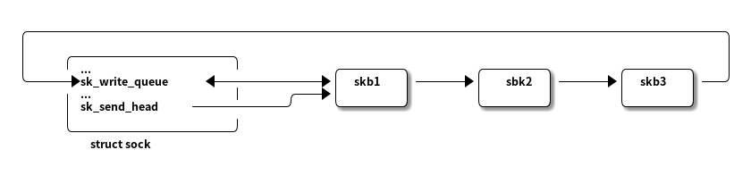

TCP的输出
Table of Contents
1. 引言
TCP段是封装在IP数据报中传输的，而IP数据报的传输是不可靠的。因此不能将TCP段发送出去后需要进行跟踪，除非出现三种情况：
- 在规定时间内，接收方已确认收到该段;
- 发生超时，在规定时间内没有收到接收方的确认;
- 确定数据包已经丢失，在后两种情况下，需要从未接收到的位置开始重新发送该数据报。
TCP传输控制块中的sk_write_queue字段存储的是发送队列双向链表头。而TCP传输控制块的另外一个成员sk_send_head指向发送队列中下一个要发送的数据包，该字段是用来跟踪哪些包还未发送，而不是用来进行发送的，如果未空，则意味着发送队列上的所有数据包都已经发送过了。
在发送方从接收方接收到ACK段后，可以扩大发送窗口，从sk_send_head开始遍历发送队列发送更多的段。
每个即将被发送的段都有一些TCP特性相关的信息，这些信息存储在skb->cb[]控制块中。该控制块提供了多种用途，TCP接收数据包时也经常使用该控制块，如果只是用来做输出处理，则不存在额外的限制。
下图描述了与发送有关的个函数之间的关系。
Figure 1: 与发送有关的函数之间的关系
在TCP输出引擎中，无论是首次发送TCP段，还是重传，或者是建立TCP连接时发送SYN段，都会调用tcp_retransmit_skb()。
- 最上层的tcp_sendmsg()和tcp_sendpage()都是用来获取数据到SKB中的，无论数据是来自用户层还是页面缓存，最后将套接口缓存加入到传输控制块的发送队列 sk_write_queue 中，并在适当的时候调用tcp_write_xmit()或tcp_push_one()尽力将这些数据报发送出去。
- 在TCP接收处理ACK段的过程中，会调用tcp_data_snd_check()来检测发送队列是否还有数据包需要发送如果有，则同样调用tcp_write_xmit()处理发送过程。
- 需要重传数据报时，无论是超时重传还是回应收到的SACK信息，都会调用tcp_retransmit_skb()来处理重传，而该函数最终还是调用tcp_transmit_skb()来发送重传数据报的。
因此应用层无论是发送数据还是响应某种事件（例如收到SACK），或者重传超时定时器到期，都会导致TCP输出相应的段。
综上所述，TCP发送方在接收方确认收到数据报之前，始终在发送队列中保留一份SKB的备份。要实现这种备份，使用克隆SKB比较高效。先创建一个纯数据区的TCP包，然后标识该SKB已被克隆，最后TCP发送引擎用克隆的SKB来建立TCP和IPv4首部，如下图：
tcp_write_xmit()从sk_send_head指向的SKB开始遍历，一旦找到可以发送的包，便克隆或复制它。
克隆的SKB主要用来构建TCP首部，整个过程在tcp_transmit_skb()中处理。注意：在发送队列sk_write_queue上的SKB与克隆的SKB共享同一个数据区。
在构建段时，tcp_sendmsg()和tcp_sendpage()需要在数据区的前部预留足够的空间，不仅要存放TCP首部，还有其他协议层的首部（IPv4）和硬件层的首部，都要填充到数据区的前部。
如果发送队列sk_write_queue上的段都发送完了，则将sk_send_head置为空。当应用层有有新的数据包发送时，sk_send_head将从新指向这些新段中的第一个。
一个TCP数据包，如果其长度小于MSS,TCP发送函数tcp_sendmsg()和tcp_sendpage()会把更多的数据添加到该数据包的尾部，直到其长度达到MSS为止。
假设发送队列sk_write_queue中有三个完整MSS长度的TCP段，且sk_send_head指向其中的第一个。调用tcp_write_xmit()时，会检测sk_send_head所指向的段的一些字段，包括TCP当前的发送窗口、拥塞窗口等，同时还会确定是否启用Nagle算法等。

发送前，当前SKB被克隆，克隆的SKB作为参数传入tcp_transmit_skb()作填充和发送处理，完成后调用update_send_head()使sk_send_head指向下一个SKB。
通过以上的处理，在用户发送更多的段之前，已成功的将发送队列中的所有包都发送出去了，sk_send_head置为空，本次发送结束。此时虽然发送队列中的所有段都发送过了，但还需要保存在发送队列中，只是将sk_send_head置为空。
当接收者确认了sk_write_queue上的SKB时，才能够从发送队列上删除并释放SKB。
2. 最大段长度（MSS）
TCP提供的是一种面向连接的、可靠的字节流服务。TCP提供可靠性的一种重要措施就是MSS。通过MSS，数据被分割为TCP认为合适发送的数据块，成为段（segment）。段不包括协议首部，只包含数据。与MSS最为相关的一个参数就是网络设备接口的MTU，以太网的MTU是1500B，其中扣除不带选项的IP首部和TCP首部长度个20B，因此MSS值为1460B。
在TCP三次握手过程中可以看到，双方都通过TCP选项通告本端能接受的MSS值，该值来源于tcp_sock结构的成员advmss，而advmss又来自路由项中的MSS度量值（metrics[RTAX_ADVMSS-1]）（参见tcp_connect_init()），路由项中的MSS度量值直接由网络设备接口的MTU减去IP首部和TCP首部的计算得到（见rt_set_nexthop()）。因此，在本地以太网中，如果IP和TCP首部都不包含选项，则MSS最大可达1460。如下图：
Figure 2: MSS的成员关系图
tcp_sock成员rx_opt，为tcp_option_received结构类型，记录来自对端的TCP选项通告，其中user_mss是用户通过TCP_MAXSEG选项设置的MSS上限，它和建立连接时对端SYN段中的MSS通告（RFC1122中明确说明通告MSS不包含TCP和IP选项）两者中取最小值作为该连接上的MSS上限，存储在mss_clamp中（也不包含TCP选项），表示对端的MSS。如果没有接收到来自对方通告的MSS，并且没有设置user_mss，则将对端的MSS设置为默认值536B（加上首部，允许576B的IP数据报）。事实上，标识对端MSS的mss_clamp，其初始值就定为536（见tcp_v4_conn_request()），收到来自对端的MSS通告后，再对其修正。
而tcp_sock成员mss_cache描述发送方当前有效的MSS，其初始值为536。如果启用路径MTU，则会根据得到的下一跳MTU和对端通告的MSS进行更新。有关通告对端MSS的成员关系图如下：
Figure 3: 有关通告对端MSS的成员关系
主要成员意义如下：
- metrics[RTAX_MTU]: 与路径关联的MTU，通过路径MTU发现的下一跳MTU会保存在此，初始化值为576或者网络设备的MTU。
- icsk_pmtu_cookie: 最近一次更新的路径MTU，inet_connection_sock结构的成员，由metrics[RTAX_MTU]初始化并更新。
- mss_cache: 发送方当前有效MSS，tcp_sock结构成员，初始化值为536。
- mss_clamp: 当前连接对端接收的MSS上限，tcp_options_received结构成员。在更新mss_cache时必须保证mss_cache不大于mss_clamp。
- user_mss: 用户设置的MSS上限，tcp_option_received结构成员，与建立连接时SYN段中MSS两者取最小值作为该连接对端接收MSS的上限，存储在mss_clamp中。
- metrics[RTAX_ADVMSS]: 初始化时根据网络设备的MTU计算得到的本端MSS上限。
- advmss: 当前连接本端接收MSS上限，tcp_sock结构成员，在建立TCP连接时通告给对端。
与最大段长度有关的一个函数是tcp_current_mss()，用来计算当前有效MSS，需要考虑TCP首部中的SACK选项和IP选项，以及PMTU。参数large_allowed表示是否允许支持TSO模式。
/* Compute the current effective MSS, taking SACKs and IP options, * and even PMTU discovery events into account. * * LARGESEND note: !urg_mode is overkill, only frames up to snd_up * cannot be large. However, taking into account rare use of URG, this * is not a big flaw. */ unsigned int tcp_current_mss(struct sock *sk, int large_allowed) { struct tcp_sock *tp = tcp_sk(sk); struct dst_entry *dst = __sk_dst_get(sk); //获取套接口路由缓存项，用来从中取出MTU u32 mss_now; u16 xmit_size_goal; int doing_tso = 0; //用当前有效MSS来初始化mss_now，用户后续计算 mss_now = tp->mss_cache; //确定是否支持TSO（large_allowed、套接口TSO特性、TCP段是否处于紧急模式） if (large_allowed && sk_can_gso(sk) && !tp->urg_mode) doing_tso = 1; if (dst) {//如果获取到路由，则取出PMTU与最近一次更新的路径MTU比较，不相等，则更新icsk_pmtu_cookie和当前有效MSS u32 mtu = dst_mtu(dst); if (mtu != inet_csk(sk)->icsk_pmtu_cookie) mss_now = tcp_sync_mss(sk, mtu); } if (tp->rx_opt.eff_sacks) //如果支持SACK选项，且下一个待发送段中存在SACK选项，则在有效MSS中减去SACK选项长度。 mss_now -= (TCPOLEN_SACK_BASE_ALIGNED + (tp->rx_opt.eff_sacks * TCPOLEN_SACK_PERBLOCK)); #ifdef CONFIG_TCP_MD5SIG //支持MD5数字签名的话，需要减去签名选项长度 if (tp->af_specific->md5_lookup(sk, sk)) mss_now -= TCPOLEN_MD5SIG_ALIGNED; #endif //如果支持TSO,则需要重新计算该套接口发送数据报时到网络设备的TCP段的长度。 //首先用当前有效MSS初始化xmit_size_goal xmit_size_goal = mss_now; if (doing_tso) {//TSO模式下，段的最大长度为64KB，在从中减去IP首部及选项、TCP首部长度 xmit_size_goal = (65535 - inet_csk(sk)->icsk_af_ops->net_header_len - inet_csk(sk)->icsk_ext_hdr_len - tp->tcp_header_len); if (tp->max_window && //支持TSO时，TCP段的长度不能超过接收方最大接收窗口的一半 (xmit_size_goal > (tp->max_window >> 1))) xmit_size_goal = max((tp->max_window >> 1), 68U - tp->tcp_header_len); //保证支持TSO的TCP段的长度是当前有效MSS的整数倍 xmit_size_goal -= (xmit_size_goal % mss_now); } //计算出TSO的TCP段长度后，更新到传输层xmit_size_goal中 tp->xmit_size_goal = xmit_size_goal; //返回获取到的MSS return mss_now; }
3. sendmsg系统调用在TCP中的实现
sendmsg系统调用在TCP中的实现分为两层–套接口层和传输接口层，主要实现在传输接口层。
系统调用通过proto_opt结构跳转表调用inet_sendmsg()，而inet_sendmsg()有通过proto结构跳转表调用tcp_sendmsg()，从而实现TCP的发送。主要部分在传输层接口tcp_sendmsg()中实现。
Figure 4: TCP中的sendmsg系统调用过程
3.1. 分割TCP段
tso_fragment()实现将支持TSO的TCP段剪切成LEN字节长，剩余的数据移动到新的SKB中，并将其添加到队列末尾的SKB后。
其中参数skb为待分段的TCP段，len为分段长，mss_now为当前MSS。如果len大于mss_now，则说明分出的段仍是支持TSO的段，mss_now用来设置该段的gso_size;否则分出的是普通段。
该函数做了多种判断，以加速段的分割，对于在线性区域有数据的段会调用tcp_fragment()来分割，而对于那些数据都在分散聚合中且从来没有发送过的SKB,分割是相当快的，不会涉及数据的复制。段分割前后的示意图如下：

Figure 5: 分割前后的TCP段
3.2. 套接口层的实现
inet_sendmsg()是sendmsg系统调用在TCP套接口层的实现，在调用传输层接口之前先判断端口与地址是否绑定，如果没有则动态绑定端口，最后调用传输层接口tcp_sendmsg()实现发送细节。
3.3. 传输层接口实现
TCP的发送工作大部分是在传输层接口中完成的，因此整个实现过程比较复杂，涉及从用户空间复制数据到内核空间、分割TCP段等。
Figure 6: tcp_sendmsg()流程图
int tcp_sendmsg(struct kiocb *iocb, struct sock *sk, struct msghdr *msg, size_t size) { struct iovec *iov; struct tcp_sock *tp = tcp_sk(sk); struct sk_buff *skb; int iovlen, flags; int mss_now, size_goal; int err, copied; long timeo; //发送和接收前都需要对传输控制块上锁，防止传输控制块的发送或接收队列由于同时操作而混乱 lock_sock(sk); TCP_CHECK_TIMER(sk); //如果发送阻塞，则需要获取阻塞超时时间，超时时间保存在sock结构的sk_sndtimeo成员中 flags = msg->msg_flags; timeo = sock_sndtimeo(sk, flags & MSG_DONTWAIT); /*只有ESTABLISHED和CLOSE_WAIT状态下，接收窗口才是打开的，才能够接收数据。 非这两种状态，通过sk_stream_wait_connect()接口等待建立连接，超时则跳转到out_err*/ /* Wait for a connection to finish. */ if ((1 << sk->sk_state) & ~(TCPF_ESTABLISHED | TCPF_CLOSE_WAIT)) if ((err = sk_stream_wait_connect(sk, &timeo)) != 0) goto out_err; //需要清除用来表示异步情况下套接口发送队列已满的标志 /* This should be in poll */ clear_bit(SOCK_ASYNC_NOSPACE, &sk->sk_socket->flags); /*获取当前有效MSS。 获取时需要将MSG_OOB去除，在tcp_current_mss()中，MSG_OOB是判断是否支持GSO的条件之一， 而带外数据不支持GSO */ mss_now = tcp_current_mss(sk, !(flags&MSG_OOB)); /* 获取发送数据报到达网络设备时数据段的最大长度，该长度用来分割数据，TCP发送段时，每个SKB大小不能超过该值。 在不支持GSO情况下，xmit_size_goal就等于MSS;如果支持GSO,则xmit_size_goal会是MSS的整数倍。 数据报发送到网络设备后，再由网络设根据MSS进行分割。*/ size_goal = tp->xmit_size_goal; //获取待发送数据块块数以及数据块指针。清零copied，该值代表已从用户数据块复制到SKB的字节数 /* Ok commence sending. */ iovlen = msg->msg_iovlen; iov = msg->msg_iov; copied = 0; err = -EPIPE; //首先初始化错误码为EPIPE //套接口是否存在错误 || 是否允许发送数据 if (sk->sk_err || (sk->sk_shutdown & SEND_SHUTDOWN)) goto do_error; //分段过程通过两个循环控制 while (--iovlen >= 0) { //该循环控制是否所有用户数据块都已经复制完成 int seglen = iov->iov_len; //获取数据块的长度 unsigned char __user *from = iov->iov_base; //获取数据块的指针 //数据块指针指向下一个数据块 iov++; while (seglen > 0) {//该循环控制每个数据块是否复制完成。 int copy; //获取传输控制块发送队列队尾的SKB，只有队尾的SKB可能存在剩余空间 skb = sk->sk_write_queue.prev; //对队尾的SKB进行校验 /** + 首先判断发送队列是否为空，为空则获取的SKB无效 + 如果队尾的SKB有效，则进一步判断是否有剩余空间，如果已使用空间还没有达到size_goal,则可以继续向其中复制数据。 + 否则发送队列为空，或者队尾SKB没有剩余空间，则需要分配新的SKB */ if (!sk->sk_send_head || (copy = size_goal - skb->len) <= 0) { new_segment: /* Allocate new segment. If the interface is SG, * allocate skb fitting to single page. */ /* 判断发送队列中段数据的总长是否达到发送缓冲区的长度上限，超过则跳转到wait_for_sndbuf处理*/ if (!sk_stream_memory_free(sk)) goto wait_for_sndbuf; //分配SKB,失败则跳转处理 skb = sk_stream_alloc_pskb(sk, select_size(sk, tp), 0, sk->sk_allocation); if (!skb) goto wait_for_memory; /* * Check whether we can use HW checksum. *///根据目的路由网络设备的特性，确定是否设置由硬件执行校验和标志 if (sk->sk_route_caps & NETIF_F_ALL_CSUM) skb->ip_summed = CHECKSUM_PARTIAL; //将SKB添加到发送队列队尾 skb_entail(sk, tp, skb); copy = size_goal; //初始化copy为发送到网络设备的最大数据段长度，copy表示每次复制到SKB的数据长度 } /* Try to append data to the end of skb. */ if (copy > seglen) //copy不能大于待复制数据长度 copy = seglen; /* Where to copy to? */ /* 判断SKB的线性存储区底部是否还有空间。如果有，则根据底部剩余空间调整copy。*/ if (skb_tailroom(skb) > 0) { /* We have some space in skb head. Superb! */ if (copy > skb_tailroom(skb)) copy = skb_tailroom(skb); //从用户空间复制copy长度的数据到SKB if ((err = skb_add_data(skb, from, copy)) != 0) goto do_fault; } else { //SKB线性存储区底部没有空间，则需要把数据复制到支持分散聚合I/O分页中。 int merge = 0; //标识是否在最后一个分页中添加数据，初始化为0。 int i = skb_shinfo(skb)->nr_frags; //当前SKB的分散片段数 struct page *page = TCP_PAGE(sk); //最后一个分片的页面 int off = TCP_OFF(sk); //已复制数据的末尾在最后一个分片的页内偏移 /* 判断最后一个分页是否能追加数据，可以则设置merge标志。 该接口用来判断该SKB上分散聚合页面是否有效，即能否将数据添加到该页。*/ if (skb_can_coalesce(skb, i, page, off) && off != PAGE_SIZE) { /* We can extend the last page * fragment. */ merge = 1; /* 如果不能向最后一个分片追加数据，则需要判断分片数量是否达到上限， 网络设备是否支持分散聚合I/O，这两种情况都不能向SKB复制数据。*/ } else if (i == MAX_SKB_FRAGS || //分派你达到上限 (!i && //网络设备不支持分散聚合I/O !(sk->sk_route_caps & NETIF_F_SG))) { /* Need to add new fragment and cannot * do this because interface is non-SG, * or because all the page slots are * busy. */ /*对当前TCP段设置PSH标志，并更新pushed_seq成员，表示到pushed_seq为止，都是希望能尽快发出的。*/ tcp_mark_push(tp, skb); goto new_segment; //开始分配新的SKB } else if (page) { //获取到了最后分页 if (off == PAGE_SIZE) { //分页中数据填满 put_page(page); TCP_PAGE(sk) = page = NULL; off = 0; } } else /* 即不能在最后的分页追加数据，也不能分配新的SKB， 此时无论SKB是否存在分页，数据必须复制到分页的起始处。*/ off = 0; //待复制数据长度不能大于页面中剩余空间的长度。 if (copy > PAGE_SIZE - off) copy = PAGE_SIZE - off; //复制数据前，判断输出缓存是否达到上限，达到上限，则等待有输出缓存可用或超时。 if (!sk_stream_wmem_schedule(sk, copy)) goto wait_for_memory; //最后一个页面为空（一般是新分配的SKB,或者前一个页面分段刚好全部使用） if (!page) { /* Allocate new cache page. */ //分配新的页面来存储数据 if (!(page = sk_stream_alloc_page(sk))) goto wait_for_memory; } /* Time to copy data. We are close to * the end! *///开始复制数据 err = skb_copy_to_page(sk, from, skb, page, off, copy); if (err) { //复制失败，则需要将page更新到socket,因为page可能是新分配的 /* If this page was new, give it to the * socket so it does not get leaked. */ if (!TCP_PAGE(sk)) { TCP_PAGE(sk) = page; TCP_OFF(sk) = 0; } goto do_error; } //成功复制数据到分页中 /* Update the skb. */ if (merge) { //如果是在最后一个分页中追加数据，则更新页面内的有效数据长度 skb_shinfo(skb)->frags[i - 1].size += copy; } else {//数据是复制到了一个新的页面分段中 //更新分段信息 skb_fill_page_desc(skb, i, page, off, copy); //如果标识最近一次分配页面的sk_sndmsg_page不为空，则增加对页面的引用 if (TCP_PAGE(sk)) { get_page(page); /* 为空则表示复制了数据的页面是新分配的，如果页面没有使用完，则增加引用，并更新sk_sndmsg_page。 （如果页面已经使用完，则只要SKB没有超过分段上限，则下次还会分配新的页面）*/ } else if (off + copy < PAGE_SIZE) { get_page(page); TCP_PAGE(sk) = page; } } //复制了数据后，需要更新数据末尾在最后一页分片的页内偏移 TCP_OFF(sk) = off + copy; } if (!copied) //复制的数据长度为0， 则取消TCPCB_FLAG_PSH标志 TCP_SKB_CB(skb)->flags &= ~TCPCB_FLAG_PSH; //更新发送队列中最后一个序号 write_seq tp->write_seq += copy; TCP_SKB_CB(skb)->end_seq += copy; //每个数据包最后一个序列end_seq skb_shinfo(skb)->gso_segs = 0; //初始化gso分段数 from += copy; //更新源数据的指针 copied += copy; //更新已复制字节数 if ((seglen -= copy) == 0 && iovlen == 0) //所有数据已经全部复制到SKB goto out; //当前SKB长度小于MSS,则可以继续向其中复制数据，或者发送的是带外数据，则跳过以下发送过程，继续复制数据到SKB if (skb->len < mss_now || (flags & MSG_OOB)) continue; /** 检查是否必须立即发送（自上次发送后产生的数据是否已经达到对方通告过的最大通告窗口值的一半）。 如果必须立即发送，则设置PSH标志后，调用__tcp_push_pending_frames将在发送队列上的SKB从sk_send_head开始发送出去。 __tcp_push_pending_frames将发送队列上的段发送出去，发送失败则检测是否需要激活持续定时器。 很多处理在tcp_write_xmit()中进行，frame()只在判断是否有段需要发送时简单的调用tcp_write_xmit()发送段，发送失败再调用tcp_check_probe_timer()复位持续探测定时器。 */ if (forced_push(tp)) { tcp_mark_push(tp, skb); __tcp_push_pending_frames(sk, tp, mss_now, TCP_NAGLE_PUSH); } else if (skb == sk->sk_send_head) //不需要立即发送，且发送队列上只有这个段 //调用tcp_push_one值发送当前段。 tcp_push_one(sk, mss_now); continue; wait_for_sndbuf: //内存操作失败的处理 /*套接口发送缓存大小有上限，一旦发送队列中段的总数据长度达到发送缓冲区上限，则不能在分配SKB,只能等待*/ set_bit(SOCK_NOSPACE, &sk->sk_socket->flags); wait_for_memory: //直接跳转到此处，说明整个系统内存不够 if (copied) //是否已经复制了部分数据 /*发送已经复制的数据， 去掉MSG_MORE表示本次发送没有更多的数据了。 第五个参数表示使用Nagle算法，可能会延后发送*/ tcp_push(sk, tp, flags & ~MSG_MORE, mss_now, TCP_NAGLE_PUSH); //进入睡眠，等待内存空闲的信号，如果超时，则通过do_error处理 if ((err = sk_stream_wait_memory(sk, &timeo)) != 0) goto do_error; //有内存可用，则重新获取当前MSS和TSO（睡眠过程中可能发生了变化） mss_now = tcp_current_mss(sk, !(flags&MSG_OOB)); size_goal = tp->xmit_size_goal; } } out: if (copied) //正常退出或者错误退出前，已经复制了数据 tcp_push(sk, tp, flags, mss_now, tp->nonagle); //发送数据，是否立即发送取决于是否启用了Nagle算法 tp->nonagle TCP_CHECK_TIMER(sk); release_sock(sk); //解锁传输控制块，如果有进程等待该sk,则唤醒 return copied; //返回已复制字节数。 do_fault: //复制数据异常 if (!skb->len) { //SKB数据长度为0,则是新分配的 if (sk->sk_send_head == skb) //sk_send_head指向该SKB,则说明该SBK之前没有需要发送的段，因此将sk_send_head置空。 sk->sk_send_head = NULL; __skb_unlink(skb, &sk->sk_write_queue); //从发送队列删除并释放该SKB sk_stream_free_skb(sk, skb); } do_error: //只有复制数据异常会跳到do_fault,其他错误跳转到此处。 if (copied) //如果已经复制了部分数据，则发送该数据 goto out; out_err: //没有复制数据，则获取错误码，解锁传输控制块 err = sk_stream_error(sk, flags, err); TCP_CHECK_TIMER(sk); release_sock(sk); return err; }
3.3.1. 输出发送队列上的段 tcp_write_xmit()
tcp_write_xmit()将发送队列上的SKB发送出去，返回值0表示发送成功。
- 检测当前状态是否TCP_CLOSE
- 检测拥塞窗口大小
- 检测当前段是否完全处在发送窗口内
- 检测段是否启用了Nagle算法
- 通过以上检测后，将SKB发送出去
- 循环检测并发送队列上所有未发送的SKB
/* This routine writes packets to the network. It advances the * send_head. This happens as incoming acks open up the remote * window for us. * * Returns 1, if no segments are in flight and we have queued segments, but * cannot send anything now because of SWS or another problem. */ static int tcp_write_xmit(struct sock *sk, unsigned int mss_now, //当前有效的MSS int nonagle) //表示是否启用nagle算法 { struct tcp_sock *tp = tcp_sk(sk); struct sk_buff *skb; unsigned int tso_segs, sent_pkts; int cwnd_quota; int result; /* If we are closed, the bytes will have to remain here. * In time closedown will finish, we empty the write queue and all * will be happy. */ //TCP_CLOSE状态则立即返回 if (unlikely(sk->sk_state == TCP_CLOSE)) return 0; sent_pkts = 0; //用于统计函数中已发送段数 /* Do MTU probing. */ //发送一个路径MTU探测段 if ((result = tcp_mtu_probe(sk)) == 0) { return 0; } else if (result > 0) {//发送成功，则send_pkts+1 sent_pkts = 1; } while ((skb = sk->sk_send_head)) { //发送队列不为空 unsigned int limit; /* 设置tso相关的信息（GSO类型、GSO分段大小等），用于软件TSO分段使用。 当网络设备不支持TSO,但又使用了TSO功能，则段在提交给网络设备之前进行软分段*/ tso_segs = tcp_init_tso_segs(sk, skb, mss_now); BUG_ON(!tso_segs); //检测拥塞窗口大小，为0,则说明拥塞窗口已满，不能发送 cwnd_quota = tcp_cwnd_test(tp, skb); if (!cwnd_quota) break; //当前段是否完全在发送窗口内，是则可以发送 if (unlikely(!tcp_snd_wnd_test(tp, skb, mss_now))) break; //tso_segs为1则无需TSO分段，检测是否使用nagle算法，并确定能否立即发送该段 if (tso_segs == 1) { if (unlikely(!tcp_nagle_test(tp, skb, mss_now, (tcp_skb_is_last(sk, skb) ? nonagle : TCP_NAGLE_PUSH)))) break; } else { //需要TSO分段，则检测该段是否延时发送 /*当段中有FIN标志，或者不处于Open拥塞状态，或者TSO段延时超过2个时钟抵达， 或者拥塞窗口和发送窗口的最小值大于64KB或三倍的当前有效MSS,这些情况下会立即发送， 其他情况延时发送。 这样做主要为了减少软GSO分段的次数，提高性能*/ if (tcp_tso_should_defer(sk, tp, skb)) break; } /** 根据条件可能需要对SKB中的段进行分段处理，分段的段包括两种： 一种是普通的拥MSS分段的段， 另一种是TSO分段的段。能否发送取决与两个条件： 段需要完全处于发送窗口内，拥塞窗口未满。 第一种段，应该不会再次分段了，因为在tcp_sendmsg中创建段的SKB时已经根据MSS处理。 第二种段，一般情况都会大于MSS,因此通过TSO分段的段可能大于拥塞窗口剩余空间，如果是这种情况， 就需要以发送窗口和拥塞窗口的最小值作为段长对数据包再次分段。 */ limit = mss_now; //limit是再次分段的段长，初始化为当前MSS if (tso_segs > 1) { //是TSO分段时，才进行处理 //以发送窗口和拥塞窗口的最小值作为分段段长 limit = tcp_window_allows(tp, skb, mss_now, cwnd_quota); //再次分段的段长大于SKB的长度，则重新计算 if (skb->len < limit) { unsigned int trim = skb->len % mss_now; //截取取SKB长度的MSS的整数倍 if (trim) limit = skb->len - trim; } } if (skb->len > limit && //SKB长度大于分段长度，则通过tso_fragment分段 unlikely(tso_fragment(sk, skb, limit, mss_now))) break; //记录此段的发送时间，用于RTT计算 TCP_SKB_CB(skb)->when = tcp_time_stamp; //发送TCP段，第三个参数表示需要克隆被发送的段。 if (unlikely(tcp_transmit_skb(sk, skb, 1, GFP_ATOMIC))) break; /* Advance the send_head. This one is sent out. * This call will increment packets_out. *//*更新sk_send_head（发送队列的下一个SKB），同时更新snd_nxt(下一个发送的序号)。 之后统计发出但没有得到确认的数据报数。最后如果发送该段前没有需要确认的段，则复位重传定时器， 对本次发送的段作重传超时计时*/ update_send_head(sk, tp, skb); //如果发送的段小于MSS,则更新最近发送的小包的最后一个字节序号 tcp_minshall_update(tp, mss_now, skb); sent_pkts++; //更新发送段数 } //本次有数据发送，则对TCP拥塞窗口进行确认 if (likely(sent_pkts)) { tcp_cwnd_validate(sk, tp); return 0; } /* 如果本次没有数据发送，根据已经发送但没被确认的段数packets_out和sk_send_head返回， packets_out不为零或sk_send_head为空都视为有数据发出*/ return !tp->packets_out && sk->sk_send_head; }
3.3.2. 输出到网络层：tcp_transmit_skb()
该函数会给带发送的段构造TCP首部，然后调用网络层接口到IP层，最终到达网络设备。由于在成功发送到网络设备后会释放该SKB，而TCP需要在接收到确认后才能真正释放数据，因此在发送前会根据参数确定是克隆还是复制一份SKB用于发送。
/* This routine actually transmits TCP packets queued in by * tcp_do_sendmsg(). This is used by both the initial * transmission and possible later retransmissions. * All SKB's seen here are completely headerless. It is our * job to build the TCP header, and pass the packet down to * IP so it can do the same plus pass the packet off to the * device. * * We are working here with either a clone of the original * SKB, or a fresh unique copy made by the retransmit engine. */ static int tcp_transmit_skb(struct sock *sk, struct sk_buff *skb, //待发送的段 int clone_it, //是否克隆 gfp_t gfp_mask) //克隆或复制SKB时分配内存的方式 { const struct inet_connection_sock *icsk = inet_csk(sk); struct inet_sock *inet; struct tcp_sock *tp; struct tcp_skb_cb *tcb; int tcp_header_size; #ifdef CONFIG_TCP_MD5SIG struct tcp_md5sig_key *md5; __u8 *md5_hash_location; #endif struct tcphdr *th; int sysctl_flags; int err; BUG_ON(!skb || !tcp_skb_pcount(skb)); /* If congestion control is doing timestamping, we must * take such a timestamp before we potentially clone/copy. */ /* 如果拥塞控制要作时间采样，则必须设置一个时间戳，之后在克隆或复制数据包。*/ if (icsk->icsk_ca_ops->rtt_sample) __net_timestamp(skb); if (likely(clone_it)) { //克隆 if (unlikely(skb_cloned(skb))) //如果该数据包已经被克隆，则只能复制SKB skb = pskb_copy(skb, gfp_mask); else//否则克隆SKB skb = skb_clone(skb, gfp_mask); if (unlikely(!skb)) //复制或克隆失败 return -ENOBUFS; } //获取INET层和TCP层的传输控制块、SKB中的TCP私有控制块以及当前TCP首部长度 inet = inet_sk(sk); tp = tcp_sk(sk); tcb = TCP_SKB_CB(skb); tcp_header_size = tp->tcp_header_len; //以下根据TCP选项重新调整TCP首部长度，三个宏定义主要用于SYN段中标志对应的TCP选项 #define SYSCTL_FLAG_TSTAMPS 0x1 #define SYSCTL_FLAG_WSCALE 0x2 #define SYSCTL_FLAG_SACK 0x4 sysctl_flags = 0; //用于标识TCP段的各种选项 if (unlikely(tcb->flags & TCPCB_FLAG_SYN)) { //SYN段处理 //建立连接时，必须通告本端的最大段长度，该选项只能出现在SYN段中 tcp_header_size = sizeof(struct tcphdr) + TCPOLEN_MSS; if(sysctl_tcp_timestamps) { //是否需要加入时间戳选项 tcp_header_size += TCPOLEN_TSTAMP_ALIGNED; sysctl_flags |= SYSCTL_FLAG_TSTAMPS; } if (sysctl_tcp_window_scaling) { //是否增加窗口扩大因子选项 tcp_header_size += TCPOLEN_WSCALE_ALIGNED; sysctl_flags |= SYSCTL_FLAG_WSCALE; } if (sysctl_tcp_sack) { //是否加入允许SACK选项 sysctl_flags |= SYSCTL_FLAG_SACK; if (!(sysctl_flags & SYSCTL_FLAG_TSTAMPS)) tcp_header_size += TCPOLEN_SACKPERM_ALIGNED; } } else if (unlikely(tp->rx_opt.eff_sacks)) { //根据SACK块数eff_sacks，再次调整TCP首部长度 /* A SACK is 2 pad bytes, a 2 byte header, plus * 2 32-bit sequence numbers for each SACK block. */ tcp_header_size += (TCPOLEN_SACK_BASE_ALIGNED + (tp->rx_opt.eff_sacks * TCPOLEN_SACK_PERBLOCK)); } //已经发出的未确认的数据包数为0,则只初始化拥塞控制，并开始跟踪该连接的RTT. if (tcp_packets_in_flight(tp) == 0) tcp_ca_event(sk, CA_EVENT_TX_START); #ifdef CONFIG_TCP_MD5SIG /* * Are we doing MD5 on this segment? If so - make * room for it. */ md5 = tp->af_specific->md5_lookup(sk, sk); if (md5) tcp_header_size += TCPOLEN_MD5SIG_ALIGNED; #endif //在数据部分的头部添加TCP首部，长度为上面计算的tcp_header_size th = (struct tcphdr *) skb_push(skb, tcp_header_size); skb->h.th = th; //保存首部地址，便于后续访问 skb_set_owner_w(skb, sk); //设置该SKB的宿主，（SKB属于哪个传输控制块） //填充TCP首部的端口、序号、确认序号以及标志位等 /* Build TCP header and checksum it. */ th->source = inet->sport; th->dest = inet->dport; th->seq = htonl(tcb->seq); th->ack_seq = htonl(tp->rcv_nxt); *(((__be16 *)th) + 6) = htons(((tcp_header_size >> 2) << 12) | tcb->flags); //设置TCP首部的接收窗口 if (unlikely(tcb->flags & TCPCB_FLAG_SYN)) { //syn段的初始值为rcv_wnd /* RFC1323: The window in SYN & SYN/ACK segments * is never scaled. */ th->window = htons(tp->rcv_wnd); } else { //其他段，则调用tcp_select_window计算当前接收窗口的大小 th->window = htons(tcp_select_window(sk)); } th->check = 0; //校验码 th->urg_ptr = 0; //紧急指针 //是否需要设置紧急指针和带外数据标志 if (unlikely(tp->urg_mode && //发送时设置了紧急方式 //并且紧急指针在以该报文数据序号为起始的65535的范围内 between(tp->snd_up, tcb->seq+1, tcb->seq+0xFFFF))) { th->urg_ptr = htons(tp->snd_up-tcb->seq); //设置紧急指针 th->urg = 1; //设置带外数据标志 } //构建TCP首部选项，syn段使用tcp_syn_build_options，其他段使用tcp_build_and_update_options if (unlikely(tcb->flags & TCPCB_FLAG_SYN)) { tcp_syn_build_options((__be32 *)(th + 1), tcp_advertise_mss(sk), (sysctl_flags & SYSCTL_FLAG_TSTAMPS), (sysctl_flags & SYSCTL_FLAG_SACK), (sysctl_flags & SYSCTL_FLAG_WSCALE), tp->rx_opt.rcv_wscale, tcb->when, tp->rx_opt.ts_recent, #ifdef CONFIG_TCP_MD5SIG md5 ? &md5_hash_location : #endif NULL); } else { tcp_build_and_update_options((__be32 *)(th + 1), tp, tcb->when, #ifdef CONFIG_TCP_MD5SIG md5 ? &md5_hash_location : #endif NULL); TCP_ECN_send(sk, tp, skb, tcp_header_size); } #ifdef CONFIG_TCP_MD5SIG /* Calculate the MD5 hash, as we have all we need now */ if (md5) { tp->af_specific->calc_md5_hash(md5_hash_location, md5, sk, NULL, NULL, skb->h.th, sk->sk_protocol, skb->len); } #endif //调用IPv4执行校验和的接口send_check计算校验和，并设置到TCP首部（tcp_v4_send_check()） icsk->icsk_af_ops->send_check(sk, skb->len, skb); //发送出去的段有ACK标志，则需要通知延时确认模块，递减快速发送ACK段的数量，同时停止延时确认定时器。 if (likely(tcb->flags & TCPCB_FLAG_ACK)) tcp_event_ack_sent(sk, tcp_skb_pcount(skb)); /* 发送TCP段有负载，则检测拥塞窗口闲置是否超时，使其失效。并记录TCP发送时间， 根据最近接收段的时间，确定本端延时确认是否进入pingpong模式 */ if (skb->len != tcp_header_size) tcp_event_data_sent(tp, skb, sk); if (after(tcb->end_seq, tp->snd_nxt) || tcb->seq == tcb->end_seq) TCP_INC_STATS(TCP_MIB_OUTSEGS); //调用发送接口queue_xmit发送报文，TCP中实现为ip_queue_xmit() err = icsk->icsk_af_ops->queue_xmit(skb, 0); if (likely(err <= 0)) return err; //发送失败时，类似接收到显式拥塞通知，使用塞控制进入CWR状态。 tcp_enter_cwr(sk); return net_xmit_eval(err); #undef SYSCTL_FLAG_TSTAMPS #undef SYSCTL_FLAG_WSCALE #undef SYSCTL_FLAG_SACK }
3.3.3. 输出发送队列上的第一个段：tcp_push_one()
/* Send _single_ skb sitting at the send head. This function requires * true push pending frames to setup probe timer etc. */ void tcp_push_one(struct sock *sk, unsigned int mss_now) { struct tcp_sock *tp = tcp_sk(sk); struct sk_buff *skb = sk->sk_send_head; unsigned int tso_segs, cwnd_quota; BUG_ON(!skb || skb->len < mss_now); //初始化与GSO相关的要素，获取gso_segs,用来计算本次发送的数据长度 tso_segs = tcp_init_tso_segs(sk, skb, mss_now); //获取目前是否可以立即发送，可以则获取当前拥塞窗口的未使用量，用于判断拥塞窗口是否还有配额用来发送。 cwnd_quota = tcp_snd_test(sk, skb, mss_now, TCP_NAGLE_PUSH); // if (likely(cwnd_quota)) { unsigned int limit; BUG_ON(!tso_segs); limit = mss_now; /* 计算本次发送的数据长度。如果本次发送的TCP段不是GSO大段，则本次发送的数据长度为当前的MSS。 否则取该大段和接收方接收窗口的较小值作为发送长度，如果该大段的长度小于当前获取的发送长度， 且该大段的长度不是当前MSS的整数倍，则修正其长度为MSS整数倍*/ if (tso_segs > 1) { limit = tcp_window_allows(tp, skb, mss_now, cwnd_quota); if (skb->len < limit) { unsigned int trim = skb->len % mss_now; if (trim) limit = skb->len - trim; } } //如果该SKB的数据总长度大于获取的发送长度，则需要分段 if (skb->len > limit && unlikely(tso_fragment(sk, skb, limit, mss_now))) return; //记录发送时间 /* Send it out now. */ TCP_SKB_CB(skb)->when = tcp_time_stamp; //发送该数据段 if (likely(!tcp_transmit_skb(sk, skb, 1, sk->sk_allocation))) { update_send_head(sk, tp, skb); //更新发送队列头，和下一个发送段的序号以及一些统计数据。 tcp_cwnd_validate(sk, tp); return; } } }
3.3.4. 输出发送队列上的tcp段：__tcp_push_pending_frames()
tcp_push()是调用__tcp_push_pending_frames()来实现输出发送队列上的TCP段。发送前需要根据flags标志确定是否添加PSH标志。带外数据则设置带外数据标志。
4. 对TCP选项的处理
4.1. 构建SYN段的选项
tcp_syn_build_options()为SYN或者SYN+ACK段构建TCP首部中的TCP选项。参数说明如下：
- ptr: 生成的TCP选项，通常是TCP首部选项部分的地址
- mss: 是否通告本端的MSS
- ts: 是否启用TCP时间戳
- sack: 是否启用SACK
- offer_wscale: 是否允许窗口缩放
- wscale: 窗口缩放的位移值
- tstamp: 时间戳相关的输出时间
- ts_recent: 时间戳相关的时间戳回显值
- md5_hash: 是否使用tcp md5签名选项
/* Construct a tcp options header for a SYN or SYN_ACK packet. * If this is every changed make sure to change the definition of * MAX_SYN_SIZE to match the new maximum number of options that you * can generate. * * Note - that with the RFC2385 TCP option, we make room for the * 16 byte MD5 hash. This will be filled in later, so the pointer for the * location to be filled is passed back up. */ static void tcp_syn_build_options(__be32 *ptr, int mss, int ts, int sack, int offer_wscale, int wscale, __u32 tstamp, __u32 ts_recent, __u8 **md5_hash) { /* We always get an MSS option. * The option bytes which will be seen in normal data * packets should timestamps be used, must be in the MSS * advertised. But we subtract them from tp->mss_cache so * that calculations in tcp_sendmsg are simpler etc. * So account for this fact here if necessary. If we * don't do this correctly, as a receiver we won't * recognize data packets as being full sized when we * should, and thus we won't abide by the delayed ACK * rules correctly. * SACKs don't matter, we never delay an ACK when we * have any of those going out. */ //组成MSS选项，建立连接时，双方都需要通告各自的MSS *ptr++ = htonl((TCPOPT_MSS << 24) | (TCPOLEN_MSS << 16) | mss); if (ts) { //如果启用TCP时间戳，则将时间戳加入TCP选项 if(sack) //启用时间戳同时也启用SACK选项，则加入选项中 *ptr++ = htonl((TCPOPT_SACK_PERM << 24) | (TCPOLEN_SACK_PERM << 16) | (TCPOPT_TIMESTAMP << 8) | TCPOLEN_TIMESTAMP); else //不允许SACK选项 *ptr++ = htonl((TCPOPT_NOP << 24) | (TCPOPT_NOP << 16) | (TCPOPT_TIMESTAMP << 8) | TCPOLEN_TIMESTAMP); *ptr++ = htonl(tstamp); /* TSVAL */ //填充时间戳值 *ptr++ = htonl(ts_recent); /* TSECR */ //时间戳回显应答 } else if(sack) //不允许时间戳，允许SACK *ptr++ = htonl((TCPOPT_NOP << 24) | (TCPOPT_NOP << 16) | (TCPOPT_SACK_PERM << 8) | TCPOLEN_SACK_PERM); if (offer_wscale) //允许窗口缩放 *ptr++ = htonl((TCPOPT_NOP << 24) | (TCPOPT_WINDOW << 16) | (TCPOLEN_WINDOW << 8) | (wscale)); #ifdef CONFIG_TCP_MD5SIG /* * If MD5 is enabled, then we set the option, and include the size * (always 18). The actual MD5 hash is added just before the * packet is sent. */ if (md5_hash) { *ptr++ = htonl((TCPOPT_NOP << 24) | (TCPOPT_NOP << 16) | (TCPOPT_MD5SIG << 8) | TCPOLEN_MD5SIG); *md5_hash = (__u8 *) ptr; } #endif }
Figure 7: 允许时间戳和SACK
Figure 8: 允许时间戳，不允许SACK
Figure 9: 时间戳值和时间戳回显应答值
Figure 10: 不允许时间戳，允许SACK

Figure 11: 窗口扩大因子选项
4.2. 构建非SYN段的选项：tcp_build_and_update_options()
该函数构建除了SYN和SYN+ACK之外的段的TCP选项。
static void tcp_build_and_update_options(__be32 *ptr, //生成的TCP选项 struct tcp_sock *tp, //构建SYN段的传输控制块，包含各种选项信息 __u32 tstamp, //时间戳，段的输出时间 __u8 **md5_hash) { if (tp->rx_opt.tstamp_ok) { //允许时间戳选项 *ptr++ = htonl((TCPOPT_NOP << 24) | (TCPOPT_NOP << 16) | (TCPOPT_TIMESTAMP << 8) | TCPOLEN_TIMESTAMP); *ptr++ = htonl(tstamp); *ptr++ = htonl(tp->rx_opt.ts_recent); } /* eff_sacks是将要发送报文的SACK队列大小，既有多少个数据块左右边界值对， TCPOLEN_SACK_PERBLOCK是每个数据块左右边界值对的大小。注意如果是DACK,则eff_sacks是DACK队列的大小，如果是SACK,则是SACK队列的大小*/ if (tp->rx_opt.eff_sacks) { //计算SACK选项总长度 struct tcp_sack_block *sp = tp->rx_opt.dsack ? tp->duplicate_sack : tp->selective_acks; int this_sack; *ptr++ = htonl((TCPOPT_NOP << 24) | (TCPOPT_NOP << 16) | (TCPOPT_SACK << 8) | (TCPOLEN_SACK_BASE + (tp->rx_opt.eff_sacks * TCPOLEN_SACK_PERBLOCK))); //遍历SACK队列，填充每个数据块左右边界值对 for(this_sack = 0; this_sack < tp->rx_opt.eff_sacks; this_sack++) { *ptr++ = htonl(sp[this_sack].start_seq); *ptr++ = htonl(sp[this_sack].end_seq); } //如果是DACK队列，则将dack队列清空，eff_sacks-1 if (tp->rx_opt.dsack) { tp->rx_opt.dsack = 0; tp->rx_opt.eff_sacks--; } } #ifdef CONFIG_TCP_MD5SIG if (md5_hash) { *ptr++ = htonl((TCPOPT_NOP << 24) | (TCPOPT_NOP << 16) | (TCPOPT_MD5SIG << 8) | TCPOLEN_MD5SIG); *md5_hash = (__u8 *)ptr; } #endif }
5. Nagle算法
为减少网络通信的开销，提升性能及吞吐速度，系统默认采用Nagle算法。若应用程序请求发送一批数据，系统在接收数据后，可能会延迟一段时间，等待数据累计到一定程度后一起发送。如果规定时间内没有新数据加入，则原先的数据也会被发送。这样会使得在单个TCP段内数据量增大。与之相反的则是使用多个TCP段，使每个段负载的数据量都比较少。如果是后一种情况，则每个段都会涉及首部的开销。采用Nagle算法后，更能有效的利用数据包的可用空间。该算法的另一个功能是确认消息的延迟发送。系统收到TCP数据之后，必须向对方发送ACK。采用该算法后，会等待一段时间，看系统是否有数据要发送给对方，以便能随发送数据一起反馈ACK，从而节省一个数据包的通信量。
但在某些情况下，会产生不利影响。例如网络应用通常只需要发送很少量的数据，同时要求能得到机器迅速的相应，那么在使用这种算法，反而影响性能，比如telnet，会导致显影迟钝。
tcp_nagel_test()用于检测在不考虑拥塞的情况下能否立即输出TCP段，检测到以下条件时，立即输出：
- 发送的是带外数据或有FIN标志的段。
- 待发送的段是全负荷段、没有启用Nagle算法或没有设置TCP_CORK标志，同时所有输出的段都已确认。
6. ACK的接收
接收已传输段的ACK，是发送方用来评估网络状况和数据传输状态和特性的基础。而ACK机制与数据传输状态和特性紧密关联体现在以下几个方面：
- 通过ACK可以是的发送方很容易的计算出数据的往返时间。
- 由于ACK段中携带了接收方的通告窗口，因此，此时接收方能够接收的数据上限为通告的接收窗口大小，接收到ACK后，在正常情况下会引发下一个段的发送。
- 通过拥塞窗口的调节，TCP可以进行限制性的传输，以免网络拥塞。从接收ACK可以判断和评估当前网络的状况，从而进一步调整拥塞窗口。
6.1. tcp_ack()
tcp_ack()用于处理接收到的有ACK标志的段，当接到有效的ACK后会更新发送窗口，发送窗口如下图：
Figure 12: 发送窗口
Figure 13: tcp_ack()流程图
| flag | 描述 |
|---|---|
| FLAG_DATA | ACK段是由带有负荷数据的段携带的 |
| FLAG_WIN_UPDATE | ACK段更新了发送窗口 |
| FLAG_DATA_ACKED | ACK段确认了新的数据 |
| FLAG_RETRANS_DATA_ACKED | 表示此段已经重传过了 |
| FLAG_SYN_ACKED | ACK段确认了SYN段 |
| FLAG_DATA_SACKED | 新的SACK |
| FLAG_ECE | ACK段中存在ECE标志，收到显式拥塞通知 |
| FLAG_DATA_LOST | 由SACK标识的数据已经丢失 |
| FLAG_SLOWPATH | 在慢速路径中处理的 |
/* This routine deals with incoming acks, but not outgoing ones. */ static int tcp_ack(struct sock *sk, struct sk_buff *skb, //接收到的ACK段 int flag) { struct inet_connection_sock *icsk = inet_csk(sk); struct tcp_sock *tp = tcp_sk(sk); u32 prior_snd_una = tp->snd_una; u32 ack_seq = TCP_SKB_CB(skb)->seq; u32 ack = TCP_SKB_CB(skb)->ack_seq; u32 prior_in_flight; s32 seq_rtt; int prior_packets; /* If the ack is newer than sent or older than previous acks * then we can probably ignore it. *///检验确认序号是否落在 SND.UNA和SND.NXT之间，否则是不合法序号 //确认序号在SND.NXT的右边，说明该序号的数据还没有发送 if (after(ack, tp->snd_nxt)) goto uninteresting_ack; /*确认序号在SND.UNA的左边，说明已经接收过该序号的ACK了。 每个有负载的TCP段都会顺便携带一个ACK序号，即使此序号已经接收过。 因此，如果是重复的ACK,则无需处理。但如果段中携带有SACK选项，则需要处理*/ if (before(ack, prior_snd_una)) goto old_ack; //启动tcp_abc后，在拥塞回避阶段，记录已确认的字节数。 if (sysctl_tcp_abc) { if (icsk->icsk_ca_state < TCP_CA_CWR) tp->bytes_acked += ack - prior_snd_una; else if (icsk->icsk_ca_state == TCP_CA_Loss) /* we assume just one segment left network */ tp->bytes_acked += min(ack - prior_snd_una, tp->mss_cache); } /** 进行更新发送窗口等操作，并根据各种信息获取ACK的各种标志 */ /*如果接收ACK执行的是快速路径，则更新发送窗口的左边界，添加FLAG_WIN_UPDATE标记， 同时通知拥塞控制算法模块本次ACK是快速路径，如有必要，做相应的处理*/ if (!(flag&FLAG_SLOWPATH) && after(ack, prior_snd_una)) { /* Window is constant, pure forward advance. * No more checks are required. * Note, we use the fact that SND.UNA>=SND.WL2. */ tcp_update_wl(tp, ack, ack_seq); tp->snd_una = ack; flag |= FLAG_WIN_UPDATE; tcp_ca_event(sk, CA_EVENT_FAST_ACK); NET_INC_STATS_BH(LINUX_MIB_TCPHPACKS); } else { /*如果接收ACK执行的慢速路径，则首先判断ACK段中是否有数据负载，有则添加FLAG_DATA标记*/ if (ack_seq != TCP_SKB_CB(skb)->end_seq) flag |= FLAG_DATA; else NET_INC_STATS_BH(LINUX_MIB_TCPPUREACKS); //更新发送窗口，同时添加更新发送窗口后获取的标记 flag |= tcp_ack_update_window(sk, tp, skb, ack, ack_seq); //如果ACK段存在SACK选项 if (TCP_SKB_CB(skb)->sacked) //通过tcp_sacktag_write_queue标记重传队列 flag |= tcp_sacktag_write_queue(sk, skb, prior_snd_una); //检测ACK段中是否存在ECE标志，有则添加FLAG_ECE if (TCP_ECN_rcv_ecn_echo(tp, skb->h.th)) flag |= FLAG_ECE; //通知拥塞控制算法模块本次ACK是慢速路径。 tcp_ca_event(sk, CA_EVENT_SLOW_ACK); } /* We passed data and got it acked, remove any soft error * log. Something worked... */ sk->sk_err_soft = 0; tp->rcv_tstamp = tcp_time_stamp; //设置最近接收数据的时间戳 prior_packets = tp->packets_out; //获取已经发送但还未确认的段数 if (!prior_packets) //不存在已经发送但还未确认的段 goto no_queue; //获取正在传输中的段数 prior_in_flight = tcp_packets_in_flight(tp); //从重传队列中删除已经确认的段 /* See if we can take anything off of the retransmit queue. */ flag |= tcp_clean_rtx_queue(sk, &seq_rtt); //如果在重传超时后使用FRTO算法，则通过tcp_process_frto()处理 if (tp->frto_counter) tcp_process_frto(sk, prior_snd_una); //根据ACK的明确与否，更新拥塞窗口，进行拥塞控制。 /* ACK是否明确，取决与以下条件，满足一项便是为ACK不明确： + 接收到的ACK是重复的 + 接收到SACK块或者显式拥塞通知 + 当前拥塞状态不处于Open */ if (tcp_ack_is_dubious(sk, flag)) { //ACK是不明确的 /* Advance CWND, if state allows this. */ //如果ACK确认了新的段，却拥塞窗口可以更新，则更新拥塞窗口，迁移拥塞状态 if ((flag & FLAG_DATA_ACKED) && tcp_may_raise_cwnd(sk, flag)) tcp_cong_avoid(sk, ack, seq_rtt, prior_in_flight, 0); tcp_fastretrans_alert(sk, prior_snd_una, prior_packets, flag); } else { //ACK是明确的，说明至少处于Open状态，如果ACK确认了新的段，则更新拥塞窗口 if ((flag & FLAG_DATA_ACKED)) tcp_cong_avoid(sk, ack, seq_rtt, prior_in_flight, 1); } /* 如果ACK确认了新的段（新的数据段、SYN段以及接收到新的SACK选项），或者接收到的ACK是重复的， 则确认该传输控制块的输出路由缓存项是有效的*/ if ((flag & FLAG_FORWARD_PROGRESS) || !(flag&FLAG_NOT_DUP)) dst_confirm(sk->sk_dst_cache); return 1; no_queue: icsk->icsk_probes_out = 0; //受到接收方的ACK,将TCP保活探测段未确认数清零。 /* If this ack opens up a zero window, clear backoff. It was * being used to time the probes, and is probably far higher than * it needs to be for normal retransmission. *///还有带发送的数据，根据情况确定是否进行零窗口探测。 /*接收到ACK,如果对方的接收窗口没有关闭，则需要清楚持续定时器的指数退避算法指数， 停止持续定时器，否则开启持续定时器*/ if (sk->sk_send_head) tcp_ack_probe(sk); //确定是否需要进行零窗口探测。 return 1; old_ack: //如果是已确认的ACK,并且带有SACK选项，则需要标记重传队列中的各个段的记分牌 if (TCP_SKB_CB(skb)->sacked) tcp_sacktag_write_queue(sk, skb, prior_snd_una); uninteresting_ack: SOCK_DEBUG(sk, "Ack %u out of %u:%u\n", ack, tp->snd_una, tp->snd_nxt); return 0; }
6.2. 发送窗口的更新：tcp_ack_update_window()
/* Update our send window. * * Window update algorithm, described in RFC793/RFC1122 (used in linux-2.2 * and in FreeBSD. NetBSD's one is even worse.) is wrong. */ static int tcp_ack_update_window(struct sock *sk, struct tcp_sock *tp, struct sk_buff *skb, //接收的ACK段 u32 ack, //ACK段的序号 u32 ack_seq) //ACK段的确认序号 { int flag = 0; u32 nwin = ntohs(skb->h.th->window); //从TCP首部获取接收方接收窗口大小 if (likely(!skb->h.th->syn)) nwin <<= tp->rx_opt.snd_wscale; //根据窗口扩大因子计算出接收窗口的字节数。 /* 判断是否可以更新发送窗口，满足以下三个条件之一就可以更新： + 确认的序号在发送窗口的SND.UNA和SND.NXT之间。 + ACK段的序号是最新的。 + 接收到重复的ACK，并且接收方的接收窗口大于当前发送方的发送窗口（可能是带有数据的TCP段） */ if (tcp_may_update_window(tp, ack, ack_seq, nwin)) { //当前ACK可以更新发送窗口 flag |= FLAG_WIN_UPDATE; //添加FLAG_WIN_UPDATE标记 tcp_update_wl(tp, ack, ack_seq); //记录最新的ACK序号到snd_wl1中。 /* 如果接收方的接收窗口与发送方的发送窗口不等，则以接收方的接收窗口更新发送方的发送窗口， 由于用于首部预测的标记与接收窗口大小有关，因此需清零预测标志，然后调用tcp_fast_path_check() 在满足条件的情况下重新计算首部预测标志。如果接收方的接收窗口大于之前的最大接收窗口， 则更新发送方发送窗口，同时重新计算MSS*/ if (tp->snd_wnd != nwin) { tp->snd_wnd = nwin; /* Note, it is the only place, where * fast path is recovered for sending TCP. */ tp->pred_flags = 0; tcp_fast_path_check(sk, tp); if (nwin > tp->max_window) { tp->max_window = nwin; tcp_sync_mss(sk, inet_csk(sk)->icsk_pmtu_cookie); } } } //最后更新发送窗口的左端，即SND.UNA tp->snd_una = ack; return flag; }
6.3. 根据SACK选项标记重传队列中段的记分牌：tcp_sacktag_write_queue
在SKB的TCP控制块中有一个sacked成员，称为记分牌，用于记录该段的传输状态，其有效的标记组合见下表。包含三个标记位：SACKED(S)，RETRANS(R)和LOST(L)。通过这些标记位，可以比较准确的计算各变量的值，如sacked_out、retrans_out和retrans_out。SACK选项的发送。
| 标记 | 当前网络中传输的数量 | 描述 |
|---|---|---|
| 0 | 1 | 原先发送的段还在网络中传输 |
| S | 0 | 原先发送的段已抵达接收方 |
| L | 0 | 原先发送的段已丢失 |
| R | 2 | 原先发送和重传的段还在网络中传输 |
| LR | 1 | 原先发送的段已经丢失，重传的段还在网络中传输 |
| SR | 1 | 原先发送的段已抵达接收方，重传的段还在网络中传输 |
以上六种状态的状态机，可以通过以下事件来控制：
- 接收到新的ACK或SACK,调用tcp_sacktag_write_queue()。
- 进行重传，调用tcp_retransmit_skb()和tcp_xmit_retransmit_queue()。
- 以下三种情况可以检测丢失事件：
- 通过记分牌来估计包是否丢失。在Reno算法中，连续接收到三个D-SACK，则说明重传队列的第一个段已经丢失。或者如果FACK发生变化，则重传队列到SND.FACK之间的段已经丢失。
- 回复的SACK超出了重传队列的尾部，则说明有段已经丢失。
- 在段被重传的时候，确认SND.NXT的SACK到达。
- D-SACK发生变化时会添加SACKED标记。
tcp_sacktag_write_queue()的功能是当接收到ACK后，根据SACK选项标记重传队列中SKB的记分牌状态，流程图如下：
Figure 14: tcp_sacktag_write_queue的流程图
/* This procedure tags the retransmission queue when SACKs arrive. * * We have three tag bits: SACKED(S), RETRANS(R) and LOST(L). * Packets in queue with these bits set are counted in variables * sacked_out, retrans_out and lost_out, correspondingly. * * Valid combinations are: * Tag InFlight Description * 0 1 - orig segment is in flight. * S 0 - nothing flies, orig reached receiver. * L 0 - nothing flies, orig lost by net. * R 2 - both orig and retransmit are in flight. * L|R 1 - orig is lost, retransmit is in flight. * S|R 1 - orig reached receiver, retrans is still in flight. * (L|S|R is logically valid, it could occur when L|R is sacked, * but it is equivalent to plain S and code short-curcuits it to S. * L|S is logically invalid, it would mean -1 packet in flight 8)) * * These 6 states form finite state machine, controlled by the following events: * 1. New ACK (+SACK) arrives. (tcp_sacktag_write_queue()) * 2. Retransmission. (tcp_retransmit_skb(), tcp_xmit_retransmit_queue()) * 3. Loss detection event of one of three flavors: * A. Scoreboard estimator decided the packet is lost. * A'. Reno "three dupacks" marks head of queue lost. * A''. Its FACK modfication, head until snd.fack is lost. * B. SACK arrives sacking data transmitted after never retransmitted * hole was sent out. * C. SACK arrives sacking SND.NXT at the moment, when the * segment was retransmitted. * 4. D-SACK added new rule: D-SACK changes any tag to S. * * It is pleasant to note, that state diagram turns out to be commutative, * so that we are allowed not to be bothered by order of our actions, * when multiple events arrive simultaneously. (see the function below). * * Reordering detection. * -------------------- * Reordering metric is maximal distance, which a packet can be displaced * in packet stream. With SACKs we can estimate it: * * 1. SACK fills old hole and the corresponding segment was not * ever retransmitted -> reordering. Alas, we cannot use it * when segment was retransmitted. * 2. The last flaw is solved with D-SACK. D-SACK arrives * for retransmitted and already SACKed segment -> reordering.. * Both of these heuristics are not used in Loss state, when we cannot * account for retransmits accurately. */ static int tcp_sacktag_write_queue(struct sock *sk, struct sk_buff *ack_skb, u32 prior_snd_una) //处理ACK前的SND.UNA值 { const struct inet_connection_sock *icsk = inet_csk(sk); struct tcp_sock *tp = tcp_sk(sk); /** 在接收TCP段之初解析TCP选项时，对SACK选项的处理比较简单，只是在SKB的TCP层TCP_SKB_CB字段sacked中 保存了SACK选项在TCP首部中的偏移。因此在此，可以根据偏移得出SACK选项的地址，以及SACK块数。*/ unsigned char *ptr = ack_skb->h.raw + TCP_SKB_CB(ack_skb)->sacked; struct tcp_sack_block_wire *sp = (struct tcp_sack_block_wire *)(ptr+2); int num_sacks = (ptr[1] - TCPOLEN_SACK_BASE)>>3; /* 用于计算本次的fackets_out，由于fackets_out必定小于或等于packets_out,因此初始值为packets_out*/ int reord = tp->packets_out; int prior_fackets; u32 lost_retrans = 0; int flag = 0; int dup_sack = 0; int i; //由于fackets_out是基于sacket_out的，因此如果对方支持SACK选项且sacked_out为零，则fackets_out也必定为零。 if (!tp->sacked_out) tp->fackets_out = 0; prior_fackets = tp->fackets_out; //暂存fackets_out更新前的值 /* SACK fastpath: * if the only SACK change is the increase of the end_seq of * the first block then only apply that SACK block * and use retrans queue hinting otherwise slowpath */ /** 从SACK选项中读取SACK块，并检测是否存在D-SACK*/ /*flag有两个作用，第一个是标记是进行快速路径处理还是慢速路径处理， flag为1时执行快速路径处理，第二个作用后面说明*/ flag = 1; //逐个处理SACK不连续块 for (i = 0; i< num_sacks; i++) { /** 将SACK块存储到recv_sack_cache中，同时确定快速路径还是慢速路径处理。 如果只有第一个SACK块的end_seq出现了增加，则执行快速路径，从上次处理SACK结束开始， 否则执行慢速路径，从重传队列头开始*/ __u32 start_seq = ntohl(sp[i].start_seq); __u32 end_seq = ntohl(sp[i].end_seq); if (i == 0){ if (tp->recv_sack_cache[i].start_seq != start_seq) flag = 0; } else { if ((tp->recv_sack_cache[i].start_seq != start_seq) || (tp->recv_sack_cache[i].end_seq != end_seq)) flag = 0; } tp->recv_sack_cache[i].start_seq = start_seq; tp->recv_sack_cache[i].end_seq = end_seq; /* Check for D-SACK. */ /** 检测SACK中的第一个块是不是D-SACK块，根据RFC2883，判断依据如下： + 如果第一个SACK块小于已确认块序号，则是D-SACK。 + 如果第一个SACK块大于已确认块序号，则还需要比较第一个SACK块和第二个SACK块， 如果第一个SACK块包含在第二个SACK块中，则说明是D-SACK*/ if (i == 0) { u32 ack = TCP_SKB_CB(ack_skb)->ack_seq; if (before(start_seq, ack)) { dup_sack = 1; tp->rx_opt.sack_ok |= 4; NET_INC_STATS_BH(LINUX_MIB_TCPDSACKRECV); } else if (num_sacks > 1 && !after(end_seq, ntohl(sp[1].end_seq)) && !before(start_seq, ntohl(sp[1].start_seq))) { dup_sack = 1; tp->rx_opt.sack_ok |= 4; NET_INC_STATS_BH(LINUX_MIB_TCPDSACKOFORECV); } /** undo_marker是超时重传或FRTO时记录的SND.UMA， prior_snd_una是根据该ACK更新窗口前的SND.UNA，如下图。 如果回复的D-SACK在这块中间，说明是超时重传或FRTO后进行的重传， 因此需要减少undo_retrans，以为接收方重复接收了，这说明网络的拥塞可能不严重。 如果由于D-SACK而导致undo_retrans为0时，说明网络通常，拥塞状态应该恢复到正常情况下。*/
Figure 15: 三个时刻的SND.UNA
/* D-SACK for already forgotten data... * Do dumb counting. */ if (dup_sack && !after(end_seq, prior_snd_una) && after(end_seq, tp->undo_marker)) tp->undo_retrans--; /* Eliminate too old ACKs, but take into * account more or less fresh ones, they can * contain valid SACK info. */ //如果回复的ACK序号是一个窗口以前的，则说明ACK太陈旧了，不需要在处理，直接返回。 if (before(ack, prior_snd_una - tp->max_window)) return 0; } } //如果执行的快速路径，则设置SACK的块数为1，因为处理第一个块即可，其他的不连续块没有发生变化，无需处理 if (flag) num_sacks = 1; else { /* 执行慢速路径，清除快速路径处理的开始点（fastpath_skb_hint指向的SKB）， 之后还需要对原始的SACK不连续块进行冒泡排序，因为SACK块最多为四个，因此即使冒泡排序也不会影响性能。 */ int j; tp->fastpath_skb_hint = NULL; /* order SACK blocks to allow in order walk of the retrans queue */ for (i = num_sacks-1; i > 0; i--) { for (j = 0; j < i; j++){ if (after(ntohl(sp[j].start_seq), ntohl(sp[j+1].start_seq))){ struct tcp_sack_block_wire tmp; tmp = sp[j]; sp[j] = sp[j+1]; sp[j+1] = tmp; } } } } //flag标记的第一个作用至此完毕，清零以以内给予第二个作用，记录处理重传队列的记分牌 /* clear flag as used for different purpose in following code */ flag = 0; //逐个处理SACK不连续块 for (i=0; i<num_sacks; i++, sp++) { struct sk_buff *skb; //获取每个块的start_seq end_seq __u32 start_seq = ntohl(sp->start_seq); __u32 end_seq = ntohl(sp->end_seq); int fack_count; //用于临时记录本次计算得到的fackets_out,如果大于传输控制块当前的fackets_out时，则更新到传输控制块中。 /* Use SACK fastpath hint if valid */ if (tp->fastpath_skb_hint) { //快速路径 skb = tp->fastpath_skb_hint; fack_count = tp->fastpath_cnt_hint; } else { //慢速路径 skb = sk->sk_write_queue.next; fack_count = 0; } /* Event "B" in the comment above. */ //如果回复的SACK超出了重传队列的尾部，则说明有段已经丢失，需要加上LOST标志 if (after(end_seq, tp->high_seq)) flag |= FLAG_DATA_LOST; //遍历重传队列，从SKB开始至sk_send_head或sk_write_queue前一个SKB为止。 sk_stream_for_retrans_queue_from(skb, sk) { int in_sack, pcount; u8 sacked; //记录重传队列中已处理的最后一个SKB,满足快速路径时，从上次结束处而不必从重传队列头开始处理。 tp->fastpath_skb_hint = skb; tp->fastpath_cnt_hint = fack_count; /* The retransmission queue is always in order, so * we can short-circuit the walk early. */ /* 由于重传队列是排序的，因此当前SKB的序号大于当前处理的SACK不连续块的右端序号时， 则说明当前SKB不再此SACK范围内，本次循环不必再处理。*/ if (!before(TCP_SKB_CB(skb)->seq, end_seq)) break; /** 对重传队列中的TSO段进行处理 */ /* 检测当前的段是否整个处于该SACK块中（如下图），如果是， 则说明当前的段接收方已完全接收到，无论是TSO段还是普通段。*/ in_sack = !after(start_seq, TCP_SKB_CB(skb)->seq) && !before(end_seq, TCP_SKB_CB(skb)->end_seq); //检测当前段是否是TSO段。 pcount = tcp_skb_pcount(skb); /** 如果当前段是TSO段，且与SACK块有交集，则说明接收方收到了部分数据， 那些已接收的段就不要要再重传了，因此把TSO段分割成普通的段。*/ if (pcount > 1 && !in_sack && after(TCP_SKB_CB(skb)->end_seq, start_seq)) { unsigned int pkt_len; /** 如果当前段是TSO段且与SACK块有交集，则只有如图中a和c两种情况。 这两种情形下计算TSO分段段长是不一样的。 如果SACK块的start_seq在段的seq之后，可以从图中的a看出seq和start_seq 之间的数据接收方没有接收到，因此可以使用（start_seq-seq）作为手动TSO分段的段长。 如果段的seq在SACK块的start_seq之后，可以从图中的c看出seq和SACK块的end_seq之间的数据 接收方已经接收到，因此可以使用（end_seq-seq）作为手动TSO分段的段长 */ in_sack = !after(start_seq, TCP_SKB_CB(skb)->seq); if (!in_sack) pkt_len = (start_seq - TCP_SKB_CB(skb)->seq); else pkt_len = (end_seq - TCP_SKB_CB(skb)->seq); //调用tcp_fragment手动对TSO段进行分段 if (tcp_fragment(sk, skb, pkt_len, skb_shinfo(skb)->gso_size)) break; //获取TSO分段后的段数，用于计算fackets_out pcount = tcp_skb_pcount(skb); } //累计fackets_out fack_count += pcount;
Figure 16: 重传队列中段与SACK块的关系
/** 如果是DSACK,且SACK块的start_seq在TCP段的seq之前，同时该TCP段的记分牌有重传标志， 则说明接收方已经重复接收了该TCP段，因此需要减少undo_retrans */ sacked = TCP_SKB_CB(skb)->sacked; /* Account D-SACK for retransmitted packet. */ if ((dup_sack && in_sack) && (sacked & TCPCB_RETRANS) && after(TCP_SKB_CB(skb)->end_seq, tp->undo_marker)) tp->undo_retrans--; /** 如果此次确认的段已经确认过，则跳过该段，处理后续的段*/ /* The frame is ACKed. */ if (!after(TCP_SKB_CB(skb)->end_seq, tp->snd_una)) { /* 如果已确认的段重传过，SACK中存在DSACK,同时当前的SACK块确认了该段， 则取fack_count和record中的较小值作为临时fackets_out保存起来*/ if (sacked&TCPCB_RETRANS) { if ((dup_sack && in_sack) && (sacked&TCPCB_SACKED_ACKED)) reord = min(fack_count, reord); } else {/* 如果已确认的段没有重传过，且落在SACK块之间的空洞中， 则取fack_count和record中的较小值作为临时fackets_out值保存起来*/ /* If it was in a hole, we detected reordering. */ if (fack_count < prior_fackets && !(sacked&TCPCB_SACKED_ACKED)) reord = min(fack_count, reord); } /* Nothing to do; acked frame is about to be dropped. */ continue; } //可能丢失的段的范围处于重传队列头和SACK块中最后一个重传段之间 if ((sacked&TCPCB_SACKED_RETRANS) && after(end_seq, TCP_SKB_CB(skb)->ack_seq) && (!lost_retrans || after(end_seq, lost_retrans))) lost_retrans = end_seq; //不处理落在SACK块之间的空隙中的段。 if (!in_sack) continue; if (!(sacked&TCPCB_SACKED_ACKED)) { /** 如果SACK块确认的是认为丢失过并经过重传的段，而此次经过了SACK确认， 说明该段没有丢失，因此取出LOST和SACKED_RETRANS标记，同时调整lost_out和retrans_out。 对于没有丢失的段，则无需清除RETRANS标记，因为此时该段还在传输过程中*/ if (sacked & TCPCB_SACKED_RETRANS) { /* If the segment is not tagged as lost, * we do not clear RETRANS, believing * that retransmission is still in flight. */ if (sacked & TCPCB_LOST) { TCP_SKB_CB(skb)->sacked &= ~(TCPCB_LOST|TCPCB_SACKED_RETRANS); tp->lost_out -= tcp_skb_pcount(skb); tp->retrans_out -= tcp_skb_pcount(skb); /* clear lost hint */ tp->retransmit_skb_hint = NULL; } } else {/** 如果SACK确认的是没有重传过的段，并且计算过程中的临时fackets_out仍小于 传输控制块当前的fackets_out，则取fack_count和record中的较小值作为临时fackets_out值保存起来。 如果该段标记丢失，则需要清楚LOST标记，同时调整lost_out并清除retransmit_skb_hint.*/ /* New sack for not retransmitted frame, * which was in hole. It is reordering. */ if (!(sacked & TCPCB_RETRANS) && fack_count < prior_fackets) reord = min(fack_count, reord); if (sacked & TCPCB_LOST) { TCP_SKB_CB(skb)->sacked &= ~TCPCB_LOST; tp->lost_out -= tcp_skb_pcount(skb); /* clear lost hint */ tp->retransmit_skb_hint = NULL; } } //该段在SACK中，需要添加相关标记，累计sacked_out,更新fackets_out TCP_SKB_CB(skb)->sacked |= TCPCB_SACKED_ACKED; flag |= FLAG_DATA_SACKED; tp->sacked_out += tcp_skb_pcount(skb); if (fack_count > tp->fackets_out) tp->fackets_out = fack_count; } else {/* 如果该段已经通过SACK确认且重传过，同时SACK中存在DSACK, 则取fack_count和record中的较小值作为临时fackets_out值保存起来。*/ if (dup_sack && (sacked&TCPCB_RETRANS)) reord = min(fack_count, reord); } /* D-SACK. We can detect redundant retransmission * in S|R and plain R frames and clear it. * undo_retrans is decreased above, L|R frames * are accounted above as well. */ /* 对于重传包的SACK,则说明重传是多余的，并且已经得到SACK确认，因此需要减小retrans_out， 并清除retrasnmit_skb_hint*/ if (dup_sack && (TCP_SKB_CB(skb)->sacked&TCPCB_SACKED_RETRANS)) { TCP_SKB_CB(skb)->sacked &= ~TCPCB_SACKED_RETRANS; tp->retrans_out -= tcp_skb_pcount(skb); tp->retransmit_skb_hint = NULL; } } } /* Check for lost retransmit. This superb idea is * borrowed from "ratehalving". Event "C". * Later note: FACK people cheated me again 8), * we have to account for reordering! Ugly, * but should help. */ /** 当前拥塞状态机处于Recovery状态中，并且存在可能丢失的段，那么在启用FACK后， 或此时如果序号在SND.UNA和lost_retrans之间的段与可能丢失的最大序号之间的段区域超过 可以重新排序的阈值，则将这些段的已重传标记去掉，因为需要重新排序，即重传从头开始。 而那些没有标记丢失或经过SACK确认的段，则明确的认为它们已经丢失，加上LOST标记。 */ if (lost_retrans && icsk->icsk_ca_state == TCP_CA_Recovery) { struct sk_buff *skb; sk_stream_for_retrans_queue(skb, sk) { if (after(TCP_SKB_CB(skb)->seq, lost_retrans)) break; if (!after(TCP_SKB_CB(skb)->end_seq, tp->snd_una)) continue; if ((TCP_SKB_CB(skb)->sacked&TCPCB_SACKED_RETRANS) && after(lost_retrans, TCP_SKB_CB(skb)->ack_seq) && (IsFack(tp) || !before(lost_retrans, TCP_SKB_CB(skb)->ack_seq + tp->reordering * tp->mss_cache))) { TCP_SKB_CB(skb)->sacked &= ~TCPCB_SACKED_RETRANS; tp->retrans_out -= tcp_skb_pcount(skb); /* clear lost hint */ tp->retransmit_skb_hint = NULL; if (!(TCP_SKB_CB(skb)->sacked&(TCPCB_LOST|TCPCB_SACKED_ACKED))) { tp->lost_out += tcp_skb_pcount(skb); TCP_SKB_CB(skb)->sacked |= TCPCB_LOST; flag |= FLAG_DATA_SACKED; NET_INC_STATS_BH(LINUX_MIB_TCPLOSTRETRANSMIT); } } } } //计算已离开主机网络但未被确认的TCP段数，包括通过SACK确认的段和确认丢失的段。 tp->left_out = tp->sacked_out + tp->lost_out; //当拥塞状态机不处于Loss状态时，如果有段被确认，则要更新排序阈值。 if ((reord < tp->fackets_out) && icsk->icsk_ca_state != TCP_CA_Loss) tcp_update_reordering(sk, ((tp->fackets_out + 1) - reord), 0); #if FASTRETRANS_DEBUG > 0 BUG_TRAP((int)tp->sacked_out >= 0); BUG_TRAP((int)tp->lost_out >= 0); BUG_TRAP((int)tp->retrans_out >= 0); BUG_TRAP((int)tcp_packets_in_flight(tp) >= 0); #endif //返回处理SACK选项得到的标记。 return flag; }
6.4. 重传队列中已经确认段的删除：tcp_clean_rtx_queue()
tcp_clean_rtx_queue()用来删除释放重传队列中已确认的段。在处理时，会遍历重传队列，直至当前段没有被完全确认为止。过程如下：
- 如果只是确认了TSO段中的一部分，则需要做特别处理
- 如果确认了路径MTU探测段，则需要作调整发送窗口等操作
- 根据段中的记分牌和处理中得到的标志，做时间戳采样等处理
- 调整fackets_out和packets_out，最后将段从重传队列中删除并释放
/* Remove acknowledged frames from the retransmission queue. */ static int tcp_clean_rtx_queue(struct sock *sk, __s32 *seq_rtt_p) //返回在删除重传队列中已确认段过程中得到的往返时间 { struct tcp_sock *tp = tcp_sk(sk); const struct inet_connection_sock *icsk = inet_csk(sk); struct sk_buff *skb; __u32 now = tcp_time_stamp; int acked = 0; __s32 seq_rtt = -1; u32 pkts_acked = 0; void (*rtt_sample)(struct sock *sk, u32 usrtt) = icsk->icsk_ca_ops->rtt_sample; struct timeval tv = { .tv_sec = 0, .tv_usec = 0 }; //循环处理重传队列的段 while ((skb = skb_peek(&sk->sk_write_queue)) && skb != sk->sk_send_head) { struct tcp_skb_cb *scb = TCP_SKB_CB(skb); __u8 sacked = scb->sacked; /* If our packet is before the ack sequence we can * discard it as it's confirmed to have arrived at * the other end. */ /** 如果之确认了TSO段中的一部分，则把已确认的部分从TCP段中删除， 同时要更新SKB中支持GSO的相关信息（gso_size gso_segs gso_type）,接着对于剩下未确认的部分， 根据标记对sacked_out、loss_out等做出更新，并计算往返时间。完成后，结束本次清理已确认段的给工作， 因为接下来的段都是还未确认的*/ if (after(scb->end_seq, tp->snd_una)) { if (tcp_skb_pcount(skb) > 1 && after(tp->snd_una, scb->seq)) acked |= tcp_tso_acked(sk, skb, now, &seq_rtt); break; } /* Initial outgoing SYN's get put onto the write_queue * just like anything else we transmit. It is not * true data, and if we misinform our callers that * this ACK acks real data, we will erroneously exit * connection startup slow start one packet too * quickly. This is severely frowned upon behavior. */ /** 如果确认了整个段，则根据标志设置临时变量acked标志，用于后续处理*/ if (!(scb->flags & TCPCB_FLAG_SYN)) { acked |= FLAG_DATA_ACKED; ++pkts_acked; } else { acked |= FLAG_SYN_ACKED; tp->retrans_stamp = 0; } /* MTU probing checks */ //如果确认了路径MTU探测段，则调用tcp_mtup_probe_success()处理 if (icsk->icsk_mtup.probe_size) { if (!after(tp->mtu_probe.probe_seq_end, TCP_SKB_CB(skb)->end_seq)) { tcp_mtup_probe_success(sk, skb); } } /** 根据该段中的记分牌和处理过程中得到的标志，进行相应处理，比如进行时间戳采样等*/ if (sacked) { //如果段重传过，则设置相应的标志，否则获取往返时间和时间戳 if (sacked & TCPCB_RETRANS) { if(sacked & TCPCB_SACKED_RETRANS) tp->retrans_out -= tcp_skb_pcount(skb); acked |= FLAG_RETRANS_DATA_ACKED; seq_rtt = -1; } else if (seq_rtt < 0) { seq_rtt = now - scb->when; skb_get_timestamp(skb, &tv); } //根据标记更新sacked_out和lost_out if (sacked & TCPCB_SACKED_ACKED) tp->sacked_out -= tcp_skb_pcount(skb); if (sacked & TCPCB_LOST) tp->lost_out -= tcp_skb_pcount(skb); if (sacked & TCPCB_URG) { //确认的段中存在带外数据，且TCP处于紧急模式，则复位 if (tp->urg_mode && !before(scb->end_seq, tp->snd_up)) tp->urg_mode = 0; } } else if (seq_rtt < 0) {/*如果段中的记分牌在处理过程中没有得到标志， 且未获取短短而往返时间，则以发送该段与接收到该ACK段之间的时间间隔作为往返时间， 同时从SKB中获取时间戳*/ seq_rtt = now - scb->when; skb_get_timestamp(skb, &tv); } /*当前段已确认了，因此需要调整fackets_out和packets_out,最后将该段从重传队列总删除释放*/ tcp_dec_pcount_approx(&tp->fackets_out, skb); tcp_packets_out_dec(tp, skb); __skb_unlink(skb, &sk->sk_write_queue); sk_stream_free_skb(sk, skb); clear_all_retrans_hints(tp); } /** 如果本次处理中有对数据或SYN段的确认，则需要测量、更新往返时间。然后根据网络传输中的 段数来确定是否启动重传定时器。 如果当前的拥塞控制算法实现了rtt_sample接口，且本次处理的不是对重传段的确认，则调用 rtt_sample接口进行往返时间的采样。 如果当前的拥塞控制算法实现了pkts_acked接口，则调用该接口进行拥塞控制算法的内部处理。 */ if (acked&FLAG_ACKED) { tcp_ack_update_rtt(sk, acked, seq_rtt); tcp_ack_packets_out(sk, tp); if (rtt_sample && !(acked & FLAG_RETRANS_DATA_ACKED)) (*rtt_sample)(sk, tcp_usrtt(&tv)); if (icsk->icsk_ca_ops->pkts_acked) icsk->icsk_ca_ops->pkts_acked(sk, pkts_acked); } #if FASTRETRANS_DEBUG > 0 BUG_TRAP((int)tp->sacked_out >= 0); BUG_TRAP((int)tp->lost_out >= 0); BUG_TRAP((int)tp->retrans_out >= 0); if (!tp->packets_out && tp->rx_opt.sack_ok) { const struct inet_connection_sock *icsk = inet_csk(sk); if (tp->lost_out) { printk(KERN_DEBUG "Leak l=%u %d\n", tp->lost_out, icsk->icsk_ca_state); tp->lost_out = 0; } if (tp->sacked_out) { printk(KERN_DEBUG "Leak s=%u %d\n", tp->sacked_out, icsk->icsk_ca_state); tp->sacked_out = 0; } if (tp->retrans_out) { printk(KERN_DEBUG "Leak r=%u %d\n", tp->retrans_out, icsk->icsk_ca_state); tp->retrans_out = 0; } } #endif //返回本次处理获取的往返时间和处理标志 *seq_rtt_p = seq_rtt; return acked; }
7. 往返时间测量和RTO的计算
TCP往返时间测量是指从发送方发送TCP段开始，到发送方接收到该段的相应所耗费的传输时间。当接收方和发送方同时支持TCP时间戳选项时，发送方记录在TCP首部选项内的间戳会被接收方随着响应反射回来，发送方就可以利用响应段反射的时间戳计算出发送段的即时往返传输层时间。在接收方应答不反射时间戳的情况下，发送方利用重发队列中非重传响应所确认的最先数据片段的时间戳来取样RTT。
发送方每接收到一次新的确认，都会产生一个新的RTT样本。为了避免RTT样本的随机抖动，系统利用加权平均算法对样本进行平滑。为了回避浮点运算，RTT的平滑值SRTT是世纪RTT均值的8倍，第二代过程和总SRTT收敛于8倍的RTT。
在平滑RTT样本值的同时，发送方还跟踪样本的抖动性。RTT的抖动用中心差（mdev）来衡量，即RTT与RTT均值偏差绝对值的加权平均，其值越大，说明RTT抖动的很厉害。tp->mdev_max变量用来跟踪MDEV的最大值，经过平滑身成rttvar,描述RTT抖动的最大范围。发送方的重发超时设置为RTT均值与rttvar的和。有关往返时间和重传超时时间的估算参见RFC2988。
在tcp_clean_rtx_queue()中，删除重传队列中已确认的段时，如果当前的确认是有效的，则会调用tcp_ack_update_rtt()测量、更新往返时间。
static inline void tcp_ack_update_rtt(struct sock *sk, const int flag, const s32 seq_rtt) { const struct tcp_sock *tp = tcp_sk(sk); /* Note that peer MAY send zero echo. In this case it is ignored. (rfc1323) */ //根据是否支持时间戳选项，选择不同的函数进行往返时间测测量和更新 if (tp->rx_opt.saw_tstamp && tp->rx_opt.rcv_tsecr) tcp_ack_saw_tstamp(sk, flag); else if (seq_rtt >= 0) tcp_ack_no_tstamp(sk, seq_rtt, flag); }
tcp_ack_saw_tstamp 和 tcp_ack_no_tstamp 这两个函数最终会调用tcp_rtt_estimator()来估算RTT,然后再设置重传超时时间。
/* Called to compute a smoothed rtt estimate. The data fed to this * routine either comes from timestamps, or from segments that were * known _not_ to have been retransmitted [see Karn/Partridge * Proceedings SIGCOMM 87]. The algorithm is from the SIGCOMM 88 * piece by Van Jacobson. * NOTE: the next three routines used to be one big routine. * To save cycles in the RFC 1323 implementation it was better to break * it up into three procedures. -- erics */ static void tcp_rtt_estimator(struct sock *sk, const __u32 mrtt) { struct tcp_sock *tp = tcp_sk(sk); long m = mrtt; /* RTT */ /* The following amusing code comes from Jacobson's * article in SIGCOMM '88. Note that rtt and mdev * are scaled versions of rtt and mean deviation. * This is designed to be as fast as possible * m stands for "measurement". * * On a 1990 paper the rto value is changed to: * RTO = rtt + 4 * mdev * * Funny. This algorithm seems to be very broken. * These formulae increase RTO, when it should be decreased, increase * too slowly, when it should be increased quickly, decrease too quickly * etc. I guess in BSD RTO takes ONE value, so that it is absolutely * does not matter how to _calculate_ it. Seems, it was trap * that VJ failed to avoid. 8) */ //用于估算RTT的采样不能为0 if(m == 0) m = 1; if (tp->srtt != 0) { //按照RFC2988中的算法（SRTT=(1-1/8)*SRTT+1/8*RTT）来获得RTT的平滑值 m -= (tp->srtt >> 3); /* m is now error in rtt est */ tp->srtt += m; /* rtt = 7/8 rtt + 1/8 new */ // 按照（mdev=3/4mdev+1/4*(|SRTT-RTT采样|)）来获得mdev if (m < 0) { m = -m; /* m is now abs(error) */ m -= (tp->mdev >> 2); /* similar update on mdev */ /* This is similar to one of Eifel findings. * Eifel blocks mdev updates when rtt decreases. * This solution is a bit different: we use finer gain * for mdev in this case (alpha*beta). * Like Eifel it also prevents growth of rto, * but also it limits too fast rto decreases, * happening in pure Eifel. */ if (m > 0) m >>= 3; } else { m -= (tp->mdev >> 2); /* similar update on mdev */ } tp->mdev += m; /* mdev = 3/4 mdev + 1/4 new */ //更新RTT抖动的最大值范围和平滑的RTT平均偏差 if (tp->mdev > tp->mdev_max) { tp->mdev_max = tp->mdev; if (tp->mdev_max > tp->rttvar) tp->rttvar = tp->mdev_max; } /** 检测是否应该复位mdev_max，即上次复位mdev_max后接收方是否已接受完一个接收窗口的数据。如果是，则复位mdev_max,同时记录复位mdev_max标记，用于下次复位。*/ if (after(tp->snd_una, tp->rtt_seq)) { if (tp->mdev_max < tp->rttvar) tp->rttvar -= (tp->rttvar-tp->mdev_max)>>2; tp->rtt_seq = tp->snd_nxt; tp->mdev_max = TCP_RTO_MIN; } } else {/** 完成一个RTT测量。根据RTT的平滑值初始化与RTT相关的变量*/ /* no previous measure. */ tp->srtt = m<<3; /* take the measured time to be rtt */ tp->mdev = m<<1; /* make sure rto = 3*rtt */ tp->mdev_max = tp->rttvar = max(tp->mdev, TCP_RTO_MIN); tp->rtt_seq = tp->snd_nxt; } }
tcp_ack_saw_tstamp 和 tcp_ack_no_tstamp 这两个函数在进行往返时间的测量和更新时，会调用tcp_set_rto()。此函数根据最近一次计算得到的RTT来计算重传超时时间。
/* Calculate rto without backoff. This is the second half of Van Jacobson's * routine referred to above. */ static inline void tcp_set_rto(struct sock *sk) { const struct tcp_sock *tp = tcp_sk(sk); /* Old crap is replaced with new one. 8) * * More seriously: * 1. If rtt variance happened to be less 50msec, it is hallucination. * It cannot be less due to utterly erratic ACK generation made * at least by solaris and freebsd. "Erratic ACKs" has _nothing_ * to do with delayed acks, because at cwnd>2 true delack timeout * is invisible. Actually, Linux-2.4 also generates erratic * ACKs in some circumstances. */ inet_csk(sk)->icsk_rto = (tp->srtt >> 3) + tp->rttvar; /* 2. Fixups made earlier cannot be right. * If we do not estimate RTO correctly without them, * all the algo is pure shit and should be replaced * with correct one. It is exactly, which we pretend to do. */ }
8. 路径MTU发现
8.1. 路径MTU发现原理
当网络上一台IP主机有数据要发送给另一台IP主机时，数据最终被封装成IP数据报来传输。最理想的情况是，数据报的大小是在从源主机到目的主机的路径上无需分片的最大尺寸。这种数据报的尺寸称作路径MTU（PMTU），等于路径上每一跳MTU中的最小值。PMTU与一条路径相关，路径是源IP地址、目的IP地址，可能还有服务类型（TOS）的特定组合，参见RFC1191。
PMTU实现的技术是简单的，在IP首部中使用不分片位DF动态发现一条路径的PMTU。基本思想是源主机一开始假定一条路径的PMTU是其已知的该路径的第一跳的MTU，在这条路径上发送的数据报都设置DF位。如果有数据报太大，不被路径中的某个路由器分片就不能转发，那么该路由器将丢弃这个数据报，然后返回一个“需要分片”，但设置了DF位的ICMP的目的不可达报文。在收到这种报文后，源主机将减小其假定的该路径的PMTU。当主机对PMTU的估计值小到其发送的数据报无需分片也能转发的时候，PMTU发现过程结束。
为了支持路i那个MTU发现技术，路由器使用需要分片的ICMP目的不可达报文，在ICMP首部第二个32位字的高16位包中包含下一跳的MTU（字段在ICMP规范中被标记位“未使用”）。低16位保持未用，必须设置位0.报文格式如下：

Figure 17: 需要分片的ICMP目的不可达报文
下一跳MTU字段的值是沿着原始数据报的路径，在当前路由器上无需分段就能转发的最大数据报的字节数，包含IP首部和IP数据，而不包含任何更底层协议的首部。该字段值不会小于68B，即每个路由器都必须能“不分段转发68B的数据报”。
RFC1191建议了PMTU发现实现在协议层次，以及PMTU信息缓存的地方、过时PMTU信息的删除、传输层的处理过程。
对于主机如何实现PMTU只是一个建议，而不是规范，因此不同的实现其算法有可能会不同。在Linux中，对于第一条PMTU发现的实现，显然没有按照[RFC 1191]的建议放在IP层，而是放在了TCP层。对于其他的几点，也只是基本根据建议的算法来实现的。
8.2. 路径MTU发现时的黑洞
主机执行路径MTU发现方法是发送尽可能大的包，在IP首部设置分片位DF。若包太大无法由路由器转发，路由器必须给源地址发送一个目的不可达需要分片的ICMP消息。主机将根据该ICMP消息调整包的大小。而实际上会由于路由器不支持该功能，或者内核bug,或者配置原因，导致许多路由器未能发送ICMP消息。
如果源主机未能收到此类ICMP消息，则将导致PMTU发现失败。没有ICMP消息通知，源主机就无法知道需要减小包大小，上层协议会继续尝试发送大包，这些包将在黑洞中消失。
当由于没有收到ICMP消息而导致PMTU发现失败时，TCP在某些条件下也会完全失效。对于到目的主机的ping和某些交互式TCP连接，这种故障难以察觉，因为其发送的数据报一般都比较小，表现正常。而大流量传输在第一个大包失败时，连接就会超时。这种情况下通常是由于网络中的配置错误造成的。
8.3. 有关数据结构的初始化
建立一个新的传输控制块后，会调用tcp_mtup_init()初始化相关成员，保活通过tcp_mtu_probing()确定是否启用路径MTU发现，用于路径MTU发现的区间，以及当前路径MTU探测段的长度。
8.4. 创建路径MTU发向TCP段并发送
tcp_mtu_probe()用来创建一个新的路径MTU发现段，该函数在tcp_write_xmit()中被调用。虽然只要有数据输出都会调用tcp_mtu_probe(),但是只有满足了某些条件才会真正创建路径MTU发现段，否则不会做任何操作。
/* Create a new MTU probe if we are ready. * Returns 0 if we should wait to probe (no cwnd available), * 1 if a probe was sent, * -1 otherwise */ static int tcp_mtu_probe(struct sock *sk) { struct tcp_sock *tp = tcp_sk(sk); struct inet_connection_sock *icsk = inet_csk(sk); struct sk_buff *skb, *nskb, *next; int len; int probe_size; unsigned int pif; int copy; int mss_now; /* Not currently probing/verifying, * not in recovery, * have enough cwnd, and * not SACKing (the variable headers throw things off) */ /** 以下几种情况，不需要进行路径MTU发现： + 未启用路径MTU + 当前路径MTU探测段的长度不是0，表示路径MTU发现段已经发出尚未得到确认。 + 拥塞控制状态不处于Open状态 + 拥塞窗口大小不足使用时 + 下一个发送的段中存在SACK选项 */ if (!icsk->icsk_mtup.enabled || icsk->icsk_mtup.probe_size || inet_csk(sk)->icsk_ca_state != TCP_CA_Open || tp->snd_cwnd < 11 || tp->rx_opt.eff_sacks) return -1; /* Very simple search strategy: just double the MSS. */ mss_now = tcp_current_mss(sk, 0); //使用两倍的MSS作为路径MTU发现段的段长。如果该段长度值大于路径MTU发现段段长的上限，则不能进行路径MTU的探测。 probe_size = 2*tp->mss_cache; if (probe_size > tcp_mtu_to_mss(sk, icsk->icsk_mtup.search_high)) { /* TODO: set timer for probe_converge_event */ return -1; } //检查发送队列中是否有足够的数据用来进行路径MTU的探测 /* Have enough data in the send queue to probe? */ len = 0; if ((skb = sk->sk_send_head) == NULL) return -1; while ((len += skb->len) < probe_size && !tcp_skb_is_last(sk, skb)) skb = skb->next; if (len < probe_size) return -1; //检测对端接收窗口是否有足够的空间用来接收路径MTU的探测段 /* Receive window check. */ if (after(TCP_SKB_CB(skb)->seq + probe_size, tp->snd_una + tp->snd_wnd)) { if (tp->snd_wnd < probe_size) return -1; else return 0; } //检测拥塞窗口是否被耗尽 /* Do we need to wait to drain cwnd? */ pif = tcp_packets_in_flight(tp); if (pif + 2 > tp->snd_cwnd) { /* With no packets in flight, don't stall. */ if (pif == 0) return -1; else return 0; } //为路径MTU探测段分配SKB，并插入到发送队列的队首。然后设置SKB中TCP控制块的相关值。 /* We're allowed to probe. Build it now. */ if ((nskb = sk_stream_alloc_skb(sk, probe_size, GFP_ATOMIC)) == NULL) return -1; sk_charge_skb(sk, nskb); skb = sk->sk_send_head; __skb_insert(nskb, skb->prev, skb, &sk->sk_write_queue); sk->sk_send_head = nskb; TCP_SKB_CB(nskb)->seq = TCP_SKB_CB(skb)->seq; TCP_SKB_CB(nskb)->end_seq = TCP_SKB_CB(skb)->seq + probe_size; TCP_SKB_CB(nskb)->flags = TCPCB_FLAG_ACK; TCP_SKB_CB(nskb)->sacked = 0; nskb->csum = 0; nskb->ip_summed = skb->ip_summed; //将发送队列中路径MTU探测段后的SKB中的数据复制到路径MTU探测段中，并释放已经被复制的SKB len = 0; while (len < probe_size) { next = skb->next; copy = min_t(int, skb->len, probe_size - len); if (nskb->ip_summed) skb_copy_bits(skb, 0, skb_put(nskb, copy), copy); else nskb->csum = skb_copy_and_csum_bits(skb, 0, skb_put(nskb, copy), copy, nskb->csum); if (skb->len <= copy) { /* We've eaten all the data from this skb. * Throw it away. */ TCP_SKB_CB(nskb)->flags |= TCP_SKB_CB(skb)->flags; __skb_unlink(skb, &sk->sk_write_queue); sk_stream_free_skb(sk, skb); } else { TCP_SKB_CB(nskb)->flags |= TCP_SKB_CB(skb)->flags & ~(TCPCB_FLAG_FIN|TCPCB_FLAG_PSH); if (!skb_shinfo(skb)->nr_frags) { skb_pull(skb, copy); if (skb->ip_summed != CHECKSUM_PARTIAL) skb->csum = csum_partial(skb->data, skb->len, 0); } else { __pskb_trim_head(skb, copy); tcp_set_skb_tso_segs(sk, skb, mss_now); } TCP_SKB_CB(skb)->seq += copy; } len += copy; skb = next; } tcp_init_tso_segs(sk, nskb, nskb->len); //最后将该路径MTU探测段输出，并记录路径MTU探测段的序号，以便之后用来确认路径MTU探测成功与否。 /* We're ready to send. If this fails, the probe will * be resegmented into mss-sized pieces by tcp_write_xmit(). */ TCP_SKB_CB(nskb)->when = tcp_time_stamp; if (!tcp_transmit_skb(sk, nskb, 1, GFP_ATOMIC)) { /* Decrement cwnd here because we are sending * effectively two packets. */ tp->snd_cwnd--; update_send_head(sk, tp, nskb); //该函数将mss转化为MTU, （mss+TCP首部+TCP选项+IP首部+IP选项） icsk->icsk_mtup.probe_size = tcp_mss_to_mtu(sk, nskb->len); tp->mtu_probe.probe_seq_start = TCP_SKB_CB(nskb)->seq; tp->mtu_probe.probe_seq_end = TCP_SKB_CB(nskb)->end_seq; return 1; } return -1; }
8.5. 路径MTU发现失败后的处理
检测路径MTU发现是否失败是在进行拥塞处理的tcp_fastretrans_alert()中进行的。如果此时处于Open状态或Discoder拥塞状态，且当前存在进行路径MTU发现的段，而等待确认的正是进行路径MTU发现的段，则说明路径MTU发现失败，需要进行相应的失败处理。首先调用tcp_mtup_probe_failed()更新与PMTU相关的参数，缩小发现路径MTU段的区间，然后重传。
8.6. 处理需要分片的ICMP目的不可达报文
ICMP模块接收到“需要分片的ICMP目的不可达报文”的消息后，根据传输层协议，如果是TCP，则会调用到tcp_v4_err()。在该函数中进而根据ICMP_DEST_UNREACH和编码ICMP_FRASG_NEEDED调用do_pmtu_discovery()进行路径MTU发现失败处理。
Figure 18: ICMP的ICMP_DEST_UNREACH茶所报文处理过程
/* * This routine does path mtu discovery as defined in RFC1191. */ static void do_pmtu_discovery(struct sock *sk, struct iphdr *iph, u32 mtu) { struct dst_entry *dst; struct inet_sock *inet = inet_sk(sk); /* We are not interested in TCP_LISTEN and open_requests (SYN-ACKs * send out by Linux are always <576bytes so they should go through * unfragmented). *///listen状态下不需要进行路径MTU发现，该状态下输出的SYN+ACK段总是小于536B，因此输出的IP数据报不会被分片。 if (sk->sk_state == TCP_LISTEN) return; /* We don't check in the destentry if pmtu discovery is forbidden * on this route. We just assume that no packet_to_big packets * are send back when pmtu discovery is not active. * There is a small race when the user changes this flag in the * route, but I think that's acceptable. *///检测当前传输控制块的路由缓存项是否可用。不可用则不继续处理 if ((dst = __sk_dst_check(sk, 0)) == NULL) return; //将获取的下一跳的MTU更新到与路由相关的路由缓存项的度量值中 dst->ops->update_pmtu(dst, mtu); /* Something is about to be wrong... Remember soft error * for the case, if this connection will not able to recover. *///如果存储在路由缓存项的度量值中的PMTU大于下一跳的MTU,且发送出的IP数据报禁止分片，则需要报告相应的错误 if (mtu < dst_mtu(dst) && ip_dont_fragment(sk, dst)) sk->sk_err_soft = EMSGSIZE; mtu = dst_mtu(dst); //允许路径MTU发现的情况下，如果缓存在传输控制块的路径MTU值大于新的值，则需将新的路径MTU值更新到传输控制块的缓存中，同时更新MSS,最后重传。 if (inet->pmtudisc != IP_PMTUDISC_DONT && inet_csk(sk)->icsk_pmtu_cookie > mtu) { tcp_sync_mss(sk, mtu); /* Resend the TCP packet because it's * clear that the old packet has been * dropped. This is the new "fast" path mtu * discovery. */ tcp_simple_retransmit(sk); } /* else let the usual retransmit timer handle it */ }
8.7. 更新当前有效的MSS
tcp_sync_mss()为传输控制块中与MSS相关的成员进行数据同步。
/* This function synchronize snd mss to current pmtu/exthdr set. tp->rx_opt.user_mss is mss set by user by TCP_MAXSEG. It does NOT counts for TCP options, but includes only bare TCP header. tp->rx_opt.mss_clamp is mss negotiated at connection setup. It is minimum of user_mss and mss received with SYN. It also does not include TCP options. inet_csk(sk)->icsk_pmtu_cookie is last pmtu, seen by this function. tp->mss_cache is current effective sending mss, including all tcp options except for SACKs. It is evaluated, taking into account current pmtu, but never exceeds tp->rx_opt.mss_clamp. NOTE1. rfc1122 clearly states that advertised MSS DOES NOT include either tcp or ip options. NOTE2. inet_csk(sk)->icsk_pmtu_cookie and tp->mss_cache are READ ONLY outside this function. --ANK (980731) */ unsigned int tcp_sync_mss(struct sock *sk, u32 pmtu) { struct tcp_sock *tp = tcp_sk(sk); struct inet_connection_sock *icsk = inet_csk(sk); int mss_now; //如果路径MTU发现段的长度上限值无效，则更新 if (icsk->icsk_mtup.search_high > pmtu) icsk->icsk_mtup.search_high = pmtu; //根据PMTU得到MSS mss_now = tcp_mtu_to_mss(sk, pmtu); //MSS不能超过接收方通告过的接收窗口的最大值的一半 /* Bound mss with half of window */ if (tp->max_window && mss_now > (tp->max_window>>1)) mss_now = max((tp->max_window>>1), 68U - tp->tcp_header_len); //保存最近更新的有效PMTU /* And store cached results */ icsk->icsk_pmtu_cookie = pmtu; //将得到的MSS更新到缓存中 if (icsk->icsk_mtup.enabled) mss_now = min(mss_now, tcp_mtu_to_mss(sk, icsk->icsk_mtup.search_low)); tp->mss_cache = mss_now; return mss_now; }
8.8. 路径MTU发现成功后的处理
tcp_clean_rtx_queue()用于检测路径MTU发心啊是否成功，如果当前存在进行路径MTU发现的段，且该端已被确认，则表示路径MTU发现成功，调用tcp_mtup_probe_sucess()进行路径MTU发现成功后的处理。
因为在Linux中拥塞窗口是以段数为单位，因此成功后需要更新与拥塞窗口相关的参数、路径MTU发现参数以及PMTU和MSS。
9. TCP重传接口
通常情况下，TCP在传送超时（即输出后，在超时时间内没接收到对应的ACK），以及接收到需要分片ICMP消息这两种情况下会发送重传，无论是什么原因导致重传，最后都会调用统一的入口函数tcp_retransmit_skb()。参数SKB为待重传的段。
/* This retransmits one SKB. Policy decisions and retransmit queue * state updates are done by the caller. Returns non-zero if an * error occurred which prevented the send. */ int tcp_retransmit_skb(struct sock *sk, struct sk_buff *skb) { struct tcp_sock *tp = tcp_sk(sk); struct inet_connection_sock *icsk = inet_csk(sk); unsigned int cur_mss = tcp_current_mss(sk, 0); int err; /* Inconslusive MTU probe */ //路径MTU发现还没有结束，无论什么原因导致的重传，都将其标志为结束 if (icsk->icsk_mtup.probe_size) { icsk->icsk_mtup.probe_size = 0; } /* Do not sent more than we queued. 1/4 is reserved for possible * copying overhead: fragmentation, tunneling, mangling etc. */ /* 如果在发送缓冲区中消耗了过多内存去做其他的一些工作（例如分片等，只有1/4的缓存用于这些工作），则暂时不可以重传*/ if (atomic_read(&sk->sk_wmem_alloc) > min(sk->sk_wmem_queued + (sk->sk_wmem_queued >> 2), sk->sk_sndbuf)) return -EAGAIN; /* 检测重传的段，接收方是否已经收到其部分或者全部。如果收到全部，则说明TCP实现代码有BUG,如果收到部分，则需要调整TCP段的伏在，即删除SKB存储区前部已经被接收方接收的数据。*/ if (before(TCP_SKB_CB(skb)->seq, tp->snd_una)) { if (before(TCP_SKB_CB(skb)->end_seq, tp->snd_una)) BUG(); if (tcp_trim_head(sk, skb, tp->snd_una - TCP_SKB_CB(skb)->seq)) return -ENOMEM; } /* If receiver has shrunk his window, and skb is out of * new window, do not retransmit it. The exception is the * case, when window is shrunk to zero. In this case * our retransmit serves as a zero window probe. */ /*如果接收方已经缩小了接收窗口，且待重传的SKB已经不再新窗口内，则不能再重传该SKB，。但有一种情况例外，就是当接收方接收窗口缩小到0,这种情况下，会发送零窗口测测段 */ if (!before(TCP_SKB_CB(skb)->seq, tp->snd_una+tp->snd_wnd) && TCP_SKB_CB(skb)->seq != tp->snd_una) return -EAGAIN; /* 如果SKB中的数据长度大于当前的MSS,则需要对该SKB分段。这种情况一般出现在启用了路径MTU,接收到需要分片ICMP目的不可达报文是，如果ICMP下一跳的PMTU小于当前PMTU,则更新当前PMTU及当前MSS. */ if (skb->len > cur_mss) { if (tcp_fragment(sk, skb, cur_mss, cur_mss)) return -ENOMEM; /* We'll try again later. */ } //为兼容某些糟糕的打印机而设置的“将错就错”选项 tcp_retrans_collapse.如果实现了该功能，则由tcp_retrans_try_collapse()实现，在重传时把数据包增大一些，来避免某些TCP协议栈中的BUG. /* Collapse two adjacent packets if worthwhile and we can. */ if(!(TCP_SKB_CB(skb)->flags & TCPCB_FLAG_SYN) && (skb->len < (cur_mss >> 1)) && (skb->next != sk->sk_send_head) && (skb->next != (struct sk_buff *)&sk->sk_write_queue) && (skb_shinfo(skb)->nr_frags == 0 && skb_shinfo(skb->next)->nr_frags == 0) && (tcp_skb_pcount(skb) == 1 && tcp_skb_pcount(skb->next) == 1) && (sysctl_tcp_retrans_collapse != 0)) tcp_retrans_try_collapse(sk, skb, cur_mss); /** 根据目的地址等条件获取路由。如果路由获取失败，则不能发送 此处的rebuild_header字面意思比较奇怪，实际执行的是查找路由的操作。 参见tcp_v4_init_sock()对 inet_csk->icsk_af_ops的初始化和inet_sk_rebuild_header(). */ if (inet_csk(sk)->icsk_af_ops->rebuild_header(sk)) return -EHOSTUNREACH; /* Routing failure or similar. */ /* Some Solaris stacks overoptimize and ignore the FIN on a * retransmit when old data is attached. So strip it off * since it is cheap to do so and saves bytes on the network. */ /** 由于某些Solaris系统的协议栈会忽略重传段上带有FIN标志的Payload,所以将payload部分全部剥离，这样可以在网络上节省一部分流量*/ if(skb->len > 0 && (TCP_SKB_CB(skb)->flags & TCPCB_FLAG_FIN) && tp->snd_una == (TCP_SKB_CB(skb)->end_seq - 1)) { if (!pskb_trim(skb, 0)) { TCP_SKB_CB(skb)->seq = TCP_SKB_CB(skb)->end_seq - 1; skb_shinfo(skb)->gso_segs = 1; skb_shinfo(skb)->gso_size = 0; skb_shinfo(skb)->gso_type = 0; skb->ip_summed = CHECKSUM_NONE; skb->csum = 0; } } /* Make a copy, if the first transmission SKB clone we made * is still in somebody's hands, else make a clone. *///进行TCP段的发送以及发送后的数据调整 //记录TCP段的发送时间 TCP_SKB_CB(skb)->when = tcp_time_stamp; //发送TCP段 err = tcp_transmit_skb(sk, skb, 1, GFP_ATOMIC); //发送成功，需要更新统计数据和状态数据（重传总次数、重传而未得到确认的TCP段数，并为该TCP段加上重传标志等） if (err == 0) { /* Update global TCP statistics. */ TCP_INC_STATS(TCP_MIB_RETRANSSEGS); tp->total_retrans++; #if FASTRETRANS_DEBUG > 0 if (TCP_SKB_CB(skb)->sacked&TCPCB_SACKED_RETRANS) { if (net_ratelimit()) printk(KERN_DEBUG "retrans_out leaked.\n"); } #endif TCP_SKB_CB(skb)->sacked |= TCPCB_RETRANS; tp->retrans_out += tcp_skb_pcount(skb); /* Save stamp of the first retransmit. */ if (!tp->retrans_stamp) tp->retrans_stamp = TCP_SKB_CB(skb)->when; tp->undo_retrans++; /* snd_nxt is stored to detect loss of retransmitted segment, * see tcp_input.c tcp_sacktag_write_queue(). *///将当前的SND.NXT存储到该控制块的ack_seq中，之后有可能在tcp_sacktag_write_queue()中用来检测丢失的重传段 TCP_SKB_CB(skb)->ack_seq = tp->snd_nxt; } return err; }